<?xml version="1.0" encoding="UTF-8"?><rss version="2.0"
	xmlns:content="http://purl.org/rss/1.0/modules/content/"
	xmlns:wfw="http://wellformedweb.org/CommentAPI/"
	xmlns:dc="http://purl.org/dc/elements/1.1/"
	xmlns:atom="http://www.w3.org/2005/Atom"
	xmlns:sy="http://purl.org/rss/1.0/modules/syndication/"
	xmlns:slash="http://purl.org/rss/1.0/modules/slash/"
	xmlns:itunes="http://www.itunes.com/dtds/podcast-1.0.dtd"
xmlns:rawvoice="http://www.rawvoice.com/rawvoiceRssModule/"
xmlns:googleplay="http://www.google.com/schemas/play-podcasts/1.0/play-podcasts.xsd"
>

<channel>
	<title>Tobias Escher &#8211; SCOREcastOnline.com</title>
	<atom:link href="." rel="self" type="application/rss+xml" />
	<link>http://www.scorecastonline.com</link>
	<description>Global Community for the Professional Media Composer</description>
	<lastBuildDate>Mon, 19 Jun 2017 08:43:18 +0000</lastBuildDate>
	<language>en-US</language>
	<sy:updatePeriod>hourly</sy:updatePeriod>
	<sy:updateFrequency>1</sy:updateFrequency>
	<generator>https://wordpress.org/?v=4.8</generator>
<!-- podcast_generator="Blubrry PowerPress/7.0.4 beta" mode="advanced" feedslug="feed" -->
	<itunes:summary>Global Community for the Professional Media Composer</itunes:summary>
	<itunes:author>Tobias Escher &#8211; SCOREcastOnline.com</itunes:author>
	<itunes:image href="../../../wp-content/plugins/powerpress/itunes_default.jpg" />
	<itunes:subtitle>Global Community for the Professional Media Composer</itunes:subtitle>
	<image>
		<title>Tobias Escher &#8211; SCOREcastOnline.com</title>
		<url>../../../wp-content/uploads/powerpress/sig-SCO.jpg</url>
		<link>http://www.scorecastonline.com</link>
	</image>
<site xmlns="com-wordpress:feed-additions:1">29563098</site>	<item>
		<title>Templates II: Technology</title>
		<link>../../../2013/06/19/templates-ii-technology/</link>
		<comments>../../../2013/06/19/templates-ii-technology/#respond</comments>
		<pubDate>Wed, 19 Jun 2013 15:00:26 +0000</pubDate>
		<dc:creator><![CDATA[Tobias Escher]]></dc:creator>
				<category><![CDATA[Tutorials]]></category>
		<category><![CDATA[gear]]></category>
		<category><![CDATA[studio]]></category>

		<guid isPermaLink="false">../../../?p=2027</guid>
		<description><![CDATA[In the second part of SC's Template series, learn about the technology and methods involved in building an orchestral template.]]></description>
				<content:encoded><![CDATA[<p>Welcome back to SCOREcast’s Orchestral Template series! This time, we will delve a bit into the technical background of creating a template. There are some ways in which a template can be set up, each of them more suited to a particular workflow and situation. But don’t worry &#8211; it won’t get too technical </p>
<p>In a nutshell, there are two general ways of hosting a template:</p>
<p>1) Inside the sequencer</p>
<p>2) Outside the sequencer (go figure!)</p>
<p>Hosting your template inside your sequencer mainly has the advantage of being easy to set up by not requiring any additional software or even hardware. Such a template works much the same way as a regular project you are working on. You load the sequencer file and are good to go. The settings of the template (the instruments loaded into it as well as for example CC values) are unique to this project and are automatically present when opening the file. Sounds good, doesn’t it? It _is_ good, but there’s more!</p>
<p>Here is where a template outside of your sequencer comes into play. Having your sequencer just play host to all those tracks, but not actually process the instruments has a number of key advantages:</p>
<p>&#8211; The sequencer just stores MIDI data and possibly audio data (if you use recordings/loops…). This keeps it mean and lean and usually results in a much snappier user experience.</p>
<p>&#8211; If multiple projects use the same (or more or less the same) set of samples, you can use the same template. This means that when switching between projects, the samples can stay loaded and you only need to load the (small) project file into the sequencer.</p>
<p>&#8211; If you are using a 64bit host, hosting plugins externally allows you (depending on the method used) to use 32bit plugins „inside“ 64bit projects without resorting to a bit bridge, which tend to be notoriously unstable.</p>
<p>&#8211; Plain and simple, some instruments simply work better in an external host. Sounds weird, but it’s the truth.</p>
<p>&#8211; Last but not least, externally hosted instruments can also mean externally hosted as in „on a different machine“. As you will see (or probably already know), this is dead easy. If set up right, there is no visible or audible difference between instruments hosted on your DAW and instruments hosted on another machine.</p>
<p>&nbsp;</p>
<h2>Technical Requirements</h2>
<p>Before having a look at the various methods of creating an externally hosted template, lets briefly look at some of the technical aspects. Like with most software applications, a template requires CPU power and lots of RAM as well as fast storage. All this also applies to running individual virtual instruments, but in the case of templates it is much more pronounced.</p>
<ul>
<li><strong>Memory (RAM):</strong> As discussed in part I, a template contains all the instruments/articulations you commonly use, quite often multiple patches with the same articulations from different libraries. In any given piece, you will end up just using a subset of all that is there. Even though it is possible to largely purge the unused samples from memory, all these instruments still need a sizable amount of RAM to stay loaded. For creating a template, having as much physical (!) memory as possible is a must. For a small orchestral template, figure in at least 16GB. That will leave a bit of headroom for the sequencer and Operating System. 32 GB is pretty decent and 64GB will allow you to host a pretty large template on a single machine. While speed is important, size is more. You will not see a huge difference between RAM clocking at 1600 MHz or 1800 MHz. But you will feel the difference between 24 and 32 GB!</li>
<li><strong>CPU:</strong> Most sample-based instruments use scripting for producing the sound you want to hear. That means that every time you play a patch, some CPU cycles will be used for calculations inside the script. Fortunately, almost all libraries are programmed relatively well so that CPU time is only used when the instrument is actually doing something. Unless you happen to use one of the rare exceptions or use VIs that use CPU power all the time, your CPU load should not be much higher than on regular projects even with a large template. Figure in some additional CPU load for the hosting software, but all in all CPU cycles will be the least of your problems.</li>
<li><strong>Storage:</strong> With rare exceptions, sampled instruments only load a small part of the full sample into the system memory. The rest is streamed from disk while playing. This small part at the beginning, called the preload buffer, serves to give the sampler something to play while it is loading the rest of the sample when needed. How well this process works largely depends on how fast your drive is able to read the rest of the file. If it is not fast enough, you will hear clicks, pops or missing notes. If that happens, the preload buffer needs to be increased. If you have a very fast drive, you can lower the preload buffer greatly. So, in a nutshell: The faster your drives are, the less data you need to load into memory and the more instruments can you load in total. That means that while drive speed is about as important as it is with regular projects, your template will nevertheless benefit greatly from fast drives. Obviously SSDs are best, but expensive.</li>
<li><strong>Network:</strong> Should you wish to host parts of your template on another machine or even multiple machines, depending on the method used you will need additional hardware. If both MIDI data to the template and audio data back to your sequencer are handled via LAN, you will need an ethernet cable to connect the machines. If you have more than one slave machine, use a switch to connect. If you also need to get audio back separately to the sequencer, you might also need an additional audio interface. Make sure all network cards involved support gigabit speed. Also use compatible Cat5 or Cat6 cables. There is very little you can do wrong here, fortunately. Sometimes onboard network chips have issues like constant crackles or pops. If that happens to you, simply get a dedicated network card.</li>
</ul>
<p>&nbsp;</p>
<h2>External Setups</h2>
<p>When setting up a template where the instruments are hosted outside your sequencer, there are four different setup styles. Each way to set things up has advantages (+) and disadvantages (-). Usually one template will mix these approaches depending on the nature of the instruments to set up:</p>
<ol>
<li>Hosting instruments/patches outside the sequencer: What you do here is have as many instruments as possible running outside the sequencer. MIDI gets sent to the instrument, its audio comes back. Very easy and straightforward.
<p>+ Easy to set up, everything inside your sequencer feels as usual, no changes in workflow<br />
&#8211; Requires a lot of audio tracks going back into the sequencer, thus very heavy on the network when using slaves</li>
<li>Like 1, but with grouped audio channels: Instead of having each instrument’s audio going back to the sequencer separately, you can group instruments together. This may be on a smaller scale like all Flute patches together, or much broader, for example all high woodwinds. Primarily it depends on how similar the instruments are in usability and how much your connection can still handle.
<p>+ Saves a lot of audio tracks, lets you adjust whole instruments quickly.<br />
&#8211; Individual instruments can not be processed separately. Make sure to only combine instruments that will receive the same post-processing.</li>
<li>Post-processing outside the sequencer: Instead of getting the direct plugin audio back on single tracks (1) or grouped (2), especially for large templates it can make sense to to do all needed post-processing of the sound outside of the sequencer. This includes panning, adding reverb, EQing individual instruments and maybe even some light compression on some sounds. This means that what goes into your sequencer is the production-quality final sound, ready for export. This approach makes most sense if the FX chain stays the same all the time with no tweaks needed.
<p>+ What you hear is the final sound. Set it up once, have it in all projects.<br />
&#8211; Making changes can be cumbersome; exporting the untreated sound means switching stuff off in the template.</li>
<li>Audio to a different application/output: If you are the lucky owner of a kick-ass mixing desk or use special software for that purpose (for example a dedicated PT rig), you can also route the audio to this external source directly from the template instead of first feeding it back to your sequencer.
<p>+ As flexible as you can get in terms of routing<br />
&#8211; Harder to set up; also it usually requires some sort of external audio interface or virtual audio cables (like JACK).</li>
</ol>
<p>So much for today. I hope you got some idea of how to approach planning a template. In part III, we will have an in-depth look at the most popular solution for building templates, VSL Vienna Ensemble Pro 5 before finally planning an example template in part IV. Until then, keep writing great music! As always, write your feedback and questions in the comments.</p>
 <!-- WP Biographia v3.3.2 -->
<div class="wp-biographia-container-top" style="background-color: #eadcdc; border-top: 4px solid #000000;"><div class="wp-biographia-pic" style="height:100px; width:100px;"></div><div class="wp-biographia-text"><h3><a href=".." title="Tobias Escher">Tobias Escher</a></h3><p>Based in Germany, Tobias J. Escher serves as Director of Technology for SCOREcast's European division. He is an educator in the field of media music and technology, and combines his classical training with his passion for music technology as a freelance composer and orchestrator. Tobias works closely with a number of software manufacturers as well as a technical administrator at the <i>University of Mainz</i>, where he graduated with an M.A. degree in Musicology and Anglophone Languages in 2012. He is also one of the founders of the <i>Unofficial Sibelius Wiki</i> and demonstrates Sibelius as an Avid artist.</p><div class="wp-biographia-links"><small><ul class="wp-biographia-list wp-biographia-list-icon"><li><a href="http://www.novatlan-sound.de" target="_blank" title="Tobias Escher On The Web" class="wp-biographia-link-icon"></a></li><li><a href="https://twitter.com/#!/NovatlanSound" target="_blank" title="Tobias Escher On Twitter" class="wp-biographia-link-icon"></a></li><li><a href="http://facebook.com/NovatlanSound" target="_blank" title="Tobias Escher On Facebook" class="wp-biographia-link-icon"></a></li><li><a href="39033404" target="_blank" title="Tobias Escher On LinkedIn" class="wp-biographia-link-icon"></a></li><li><a href="http://www.youtube.com/user/NovatlanSound" target="_blank" title="Tobias Escher On YouTube" class="wp-biographia-link-icon"></a></li><li><a href=".." target="_blank" title="More Posts By Tobias Escher" class="wp-biographia-link-icon"></a></li></ul></small></div></div></div><!-- WP Biographia v3.3.2 -->
]]></content:encoded>
			<wfw:commentRss>../../../2013/06/19/templates-ii-technology/feed/</wfw:commentRss>
		<slash:comments>0</slash:comments>
	<post-id xmlns="com-wordpress:feed-additions:1">2027</post-id>	</item>
		<item>
		<title>Templates I: Introduction</title>
		<link>../../../2013/04/24/templates-i-introduction/</link>
		<comments>../../../2013/04/24/templates-i-introduction/#comments</comments>
		<pubDate>Wed, 24 Apr 2013 15:00:28 +0000</pubDate>
		<dc:creator><![CDATA[Tobias Escher]]></dc:creator>
				<category><![CDATA[Latest Resources]]></category>
		<category><![CDATA[Technology]]></category>

		<guid isPermaLink="false">../../../?p=2007</guid>
		<description><![CDATA[Sequencer templates have become an important part of most composers workflow. This first part of SC's new template series introduces the topic and explains what templates can do for you.]]></description>
				<content:encoded><![CDATA[<p>Howdy, fellow SCOREcasters! The industry we work in demands a lot. Time pressure, the need to stand out, to have a unique voice and most of all the actual need to come up with something good at all means we have to stay on top of our game as best as we can. One piece of the puzzle that has become ever more important in recent years is having a template. This article is the first part of a series dealing with exactly that. We will have a look at what a template actually is and why you should want to have one (or more). We will deal with the technology behind it (part II), some software to make it reality (part III) and how to approach building one for yourself (part IV). The journey does not end here, though. Based on your feedback, this series will continue with additional topics. So, after reading this first part, voice your thoughts and questions in the comments.</p>
<h2>What is a template?</h2>
<p>You’re sitting in front of your composing desk and have just read a brief. You’ve even managed to get a few ideas how to pull this off. You start up your sequencer, load in an instrument track, add an instance of your sampler, think of a nice patch to start with, load it in and begin playing. No, actually you don’t. Because by the time you have finally loaded everything, you have completely forgotten your brilliant musical idea. Its gone. *He’s dead, Jim!* Does this sound familiar? Hand up, please, everyone who has been in that situation. I sure have.</p>
<p>What if you were able to just play away when that bolt of inspiration strikes? How awesome would that be? That’s what templates are for. Simply put, a template in its most basic form is nothing more than a project in your sequencer which is already populated with a number of tracks containing instruments/articulations that you rely on all the time. So instead of having to create a track, loading Kontakt, searching for that string patch and loading it in, all you need to do is select a track and you’re good to go. Whenever you start a new project, instead of loading an empty session in your sequencer, you load a copy of your template.</p>
<h2>What is in there?</h2>
<p>You probably have a favourite piano patch. Maybe you even routinely use one when looking for inspiration. Just noodling away on one patch until you a nice tune creeps up is an important part of the creative process. Similarly, you have a favourite string library; that one particular trumpet patch; or even that big whooping bass synth sound that sculpts the low end of your tracks. Especially in the orchestral realm, over time as a composer you will build „your orchestra“ out of the various sample libraries you have purchased. This line-up stays relatively consistent between projects. Just have a look at your music and you will see that you have some preferences. All these patches have their place in your template. Being able to access them without first needing to load them in allows you to be creative the second you sit down at your composing desk. Furthermore, it obviously saves you a lot of time starting with a pre-populated arrange instead of having to load in the same stuff on every new cue.</p>
<h2>Do it once, have it for eternity</h2>
<p>Saving time actually is one of the main reasons why taking the time to set up a template makes sense: Things like routing, possibly stems, reverb setup and basic post-production are more or less the same on most tracks. If you use samples that need panning to sound realistic, those settings tend to stay the same in different projects. In a regular orchestral setup, the Violins I are panned quite a bit to the left, the Trumpets are more in the back to the right of the conductor. Using these settings you spent considerable time to set up and tweak in other projects not only makes sense, but also lets you be more productive. A template allows you to set everything up the way you need it and create new projects based on that work later.</p>
<p>The same applies to changes to patches. You might change CC assignments to make something work with your wind controller. Or map instrument parameters to knobs on your controller keyboard to be able to control them while recording. Having all this saved as part of your template makes sure it is exactly as you want it every time you begin a new project.</p>
<p>Last but not least, having everything set up in this way also helps with mixing: Different sample libraries have different relative volume levels. If you take the time once to adjust the volume of all patches relative to each other, you won’t need to work your faders so much anymore to get instruments to sound good together. Making sure the relative volume of different instruments is as close to the real thing as possible is an important part of creating realistic mockups.</p>
<h2>What is not in there?</h2>
<p>That’s an easy one! All those patches you only use on very specific projects are better of being project-specific, i.e. not being loaded as part of the template. This is to save loading time for the whole thing and to avoid having a large number of tracks that you only use once a year. So maybe this (admittedly gorgeous) baroque Viola d’amore patch might be better left out </p>
<h2>Manage your arsenal</h2>
<p>Having a template ready also is a way to make sure you actually use the samples you’ve got. Ever caught yourself just loading a generic string patch for noodling around and then ending up with that exact same patch in the final version, just because you couldn’t be bothered to look for a better one? A template with a variety of different patches for various uses lets you find the patch that fits best. It also invites you to toy around with instrumentation: How about giving that line to the Flute? Nah, that sucks, Oboe sounds better! Since all instruments are already there and you don’t need to create a new track or change an existing one to try out some other instrument, you can easily test different instrumentations.</p>
<p>Picture a template like a toolset. It provides you with quick access to all the instruments and patches you need, completely set up with your CC assignments, routing, reverb, and so on. In its most basic form, a template saves you time and makes sure you can begin writing quicker.</p>
<h2>What does it require?</h2>
<p>A template by its very nature contains a lot of tracks, not all of which you will use in every project. All these samples nevertheless need to be loaded, so hosting a large template first and foremost demands a lot of RAM. While it is possible to remove unused samples from memory, the bare patches still need some memory when loaded. But unless you are really low on memory, having a template far outweighs the disadvantages. It takes some time to plan a template and to set it up. We will deal with that part in a later article, but just so you know: This ain’t nothing to be done in a few hours. Some very good news at the end: The monetary requirements are as low as it can get. While it makes sense to use specialised software to host the template, this is not a must &#8211; and even if you do use this software, it is not very expensive. We will deal with all that in detail later. You can set up a basic template in your sequencer with no additional software or hardware required.</p>
<p>&nbsp;</p>
<p>I hope you found this article interesting. Part II will deal with the technical background of setting up a template and the various approaches to it. Post your questions and feedback in the comments below!</p>
 <!-- WP Biographia v3.3.2 -->
<div class="wp-biographia-container-top" style="background-color: #eadcdc; border-top: 4px solid #000000;"><div class="wp-biographia-pic" style="height:100px; width:100px;"></div><div class="wp-biographia-text"><h3><a href=".." title="Tobias Escher">Tobias Escher</a></h3><p>Based in Germany, Tobias J. Escher serves as Director of Technology for SCOREcast's European division. He is an educator in the field of media music and technology, and combines his classical training with his passion for music technology as a freelance composer and orchestrator. Tobias works closely with a number of software manufacturers as well as a technical administrator at the <i>University of Mainz</i>, where he graduated with an M.A. degree in Musicology and Anglophone Languages in 2012. He is also one of the founders of the <i>Unofficial Sibelius Wiki</i> and demonstrates Sibelius as an Avid artist.</p><div class="wp-biographia-links"><small><ul class="wp-biographia-list wp-biographia-list-icon"><li><a href="http://www.novatlan-sound.de" target="_blank" title="Tobias Escher On The Web" class="wp-biographia-link-icon"></a></li><li><a href="https://twitter.com/#!/NovatlanSound" target="_blank" title="Tobias Escher On Twitter" class="wp-biographia-link-icon"></a></li><li><a href="http://facebook.com/NovatlanSound" target="_blank" title="Tobias Escher On Facebook" class="wp-biographia-link-icon"></a></li><li><a href="39033404" target="_blank" title="Tobias Escher On LinkedIn" class="wp-biographia-link-icon"></a></li><li><a href="http://www.youtube.com/user/NovatlanSound" target="_blank" title="Tobias Escher On YouTube" class="wp-biographia-link-icon"></a></li><li><a href=".." target="_blank" title="More Posts By Tobias Escher" class="wp-biographia-link-icon"></a></li></ul></small></div></div></div><!-- WP Biographia v3.3.2 -->
]]></content:encoded>
			<wfw:commentRss>../../../2013/04/24/templates-i-introduction/feed/</wfw:commentRss>
		<slash:comments>8</slash:comments>
	<post-id xmlns="com-wordpress:feed-additions:1">2007</post-id>	</item>
		<item>
		<title>How to Use iTunes as a Reference Database</title>
		<link>../../../2012/12/05/how-to-use-itunes-as-a-reference-database/</link>
		<comments>../../../2012/12/05/how-to-use-itunes-as-a-reference-database/#comments</comments>
		<pubDate>Wed, 05 Dec 2012 16:00:00 +0000</pubDate>
		<dc:creator><![CDATA[Tobias Escher]]></dc:creator>
				<category><![CDATA[Latest Resources]]></category>
		<category><![CDATA[Technology]]></category>
		<category><![CDATA[Tutorials]]></category>

		<guid isPermaLink="false">../../../?p=1740</guid>
		<description><![CDATA[One of the most underrated applications on the planet, iTunes can be a powerful tool for finding reference material and inspiration in a heartbeat. This article as the first in a series about iTunes for Composers shows you how.]]></description>
				<content:encoded><![CDATA[<p>With a shiny new version of iTunes just having arrived from Apple’s secret labs, the timing is just perfect to introduce you to this software as a powerful tool for organizing reference material. iTunes is maybe the most underrated and misunderstood application on the planet. Many people just see it as a way to fill their iPhones. While it certainly is pretty good at doing that, it also can serve as a tool to give you access to music you might want to listen to for inspiration. iTunes also works great for cataloguing your own work for reference, but we will come to that in a future article.</p>
<p>So what are we talking about here? I don’t know about you, but at least I am constantly prompted to cal up this or that film score. People say „I want something like XY did in that film!“. Fortunately, with a big record collection, I usually have that particular score at hand &#8211; now all I need is to find it. Also quite often I search for inspiration in my collection. I want to listen to a bunch of horror film scores, but don’t know any particular names of films or composers. Or maybe I remember which year that particular album was from, but not the name. Either way, iTunes can help in these situations, provided that you organize your collection efficiently.</p>
<p>In this article I will show you a number of tips and tricks for making iTunes effortlessly present you with exactly what you are looking for when searching for inspiration.</p>
<p>1) Tag your stuff: It may be painfully obvious, but still most people do not correctly tag their music. Every track should have as much information as possible, including composer _and_ artist(s). If multiple artists (for example soloists) perform in one album, give all of them a common album artist. This will keep your albums together. Also fill out the year and CD number as well as track number tags. These are very important for finding tracks quickly.</p>
<p>2) Use the grouping for combining different sections of a work: The grouping tag is the most important tag for quickly finding tracks that belong together. For classical works, place the composer in this tag, followed by the name of the work. For example „Elfman &#8211; Serenada Schizophrana“. You can then just have the title of the movements in the track name and do not need to clutter six or seven tracks with the title of the work, followed by the movement title. This also allows you to at a glance see all the recordings you have of a particular work by just searching for its grouping.</p>
<p>3) Unify names: Quite a lot of names can either be spelled different ways (take Russian composers, for example: Shostakovich vs. Schostakowitsch) or are susceptible to being spelled wrong (for example Bernard Herrmann has had gruesome things done to this first and last name!). This happens a lot even on commercial releases &#8211; I have even seen an album in a major music store by „John Wilaims“. At least they were consistent in spelling the poor man wrong in the whole booklet, too. Check this &#8211; nothing is worse than frantically looking for that Michael Giacchino album which you absolutely know to have in your library, but not finding it, because the man is misspelled. This is double worse &#8211; and embarrassing &#8211; when happening in front of a client.</p>
<p>4) Use album covers: Many of us are visual thinkers. Having album covers for every album is a bit of work, especially if you need to scan in covers of rare to find albums, but especially in the light of iTunes 11’s reliance on a grid of covers as the main method of navigating, it is simply a must. Album covers also go a long way to bring as much of the good old vinyl days to the digital age. As artists we should always make sure to include cover art with albums as a token of respect for the talented people who created this artwork.</p>
<p>5) Use the sorting tags: In the track info window (Apple/Cmd-I) you will find a large number of tags that are used for sorting albums. You can use these to influence the order in which your albums are displayed inside the library. Basically what iTunes does is use those tags (if present) for sorting, but will still use the regular tags when displaying the albums. As an example, if you have an album called „X“ and call it „A“ in the Album for Sorting tag, it will appear under the letter „A“ inside your library, but will still be called „X“. These tags are extremely useful when grouping together albums that belong together in a series in a particular order, but would be sorted differently because of their names. One such series of film scores that comes to mind is Harry Potter. „C“ comes before „S“ or „P“ in the alphabet, so the second film (Chamber of Secrets) is sorted before the first (Philosopher’s/Sorcerer’s Stone). Just name them „Harry Potter 1“and so on  as the Album for Sorting and you are done. You will find that searching for „Chamber of Secrets“ will still have the album turn up in the search results because iTunes searches all tags by default and the sorting tags do not override the regular tags as far as searching is concerned.</p>
<p>6) Use unused tags: Chances are high you never need that BPM tag. Firstly, the BPM tend to change quite frequently in our kind of music. Secondly, you are unlikely to ever need to play your newest film score at the hottest club in town, where beat-matching is a must. Use this tag for organizing your music. You might for example enter the shelf number that particular CD is stored on, or the hard drive number where the cue is located. Anything that has numbers.</p>
<p>7) Use TV tags: Every file in iTunes can have the tags reserved for TV shows, even if it is not TV show or even a video file at all. Of course when cataloguing music for TV shows it makes perfect sense to use these tags. Enter the season, the episode number and additional information. For all other files, use these tags for other information, like the director of the movie, or the scoring stage the album was recorded at.</p>
<p>8) Be creative with genres: If you mainly have film scores in your library, there is no reason to leave the genre for all of them as „Soundtrack“. Firstly, as we all know, it is sort of incorrect because the soundtrack is everything you can hear, not just the actual score; secondly it makes no sense to have „Alien“ in the same genre as „The Sea Hawk“. Change the genre to „SciFi“ or „Golden Age“ and, voilà, searching for „Golden Age“ will magically pull up all scores fitting that era.</p>
<p>9) Understand the search function: The one basic thing about iTunes’ search to know is that it uses the „AND“ operator by default. So when looking for „Jerry Goldsmith SciFi“ it will pull up all tracks that have these two terms somewhere in their tags. „Alien“ will be in there; „Freud“ not so much. You can also search for ratings: „Alan Menken ****“ will pull up all albums with his name and four stars.</p>
<p>10) Make Smart Playlists: There will be an additional article about some Smart Playlists that have proven indispensable for me, but here’s my favorite: Make a playlist with the condition „Last played more than a year ago“. You will discover tons of great music that you haven’t listened to in ages. I guarantee you will immediately feel inspired to write the next big thing!</p>
<p>I hope these ten tips sparked your interest in iTunes and helped you get your collection up to speed. Stay tuned for more about collecting research material &#8211; and let me know what you think in the comments!</p>
 <!-- WP Biographia v3.3.2 -->
<div class="wp-biographia-container-top" style="background-color: #eadcdc; border-top: 4px solid #000000;"><div class="wp-biographia-pic" style="height:100px; width:100px;"></div><div class="wp-biographia-text"><h3><a href=".." title="Tobias Escher">Tobias Escher</a></h3><p>Based in Germany, Tobias J. Escher serves as Director of Technology for SCOREcast's European division. He is an educator in the field of media music and technology, and combines his classical training with his passion for music technology as a freelance composer and orchestrator. Tobias works closely with a number of software manufacturers as well as a technical administrator at the <i>University of Mainz</i>, where he graduated with an M.A. degree in Musicology and Anglophone Languages in 2012. He is also one of the founders of the <i>Unofficial Sibelius Wiki</i> and demonstrates Sibelius as an Avid artist.</p><div class="wp-biographia-links"><small><ul class="wp-biographia-list wp-biographia-list-icon"><li><a href="http://www.novatlan-sound.de" target="_blank" title="Tobias Escher On The Web" class="wp-biographia-link-icon"></a></li><li><a href="https://twitter.com/#!/NovatlanSound" target="_blank" title="Tobias Escher On Twitter" class="wp-biographia-link-icon"></a></li><li><a href="http://facebook.com/NovatlanSound" target="_blank" title="Tobias Escher On Facebook" class="wp-biographia-link-icon"></a></li><li><a href="39033404" target="_blank" title="Tobias Escher On LinkedIn" class="wp-biographia-link-icon"></a></li><li><a href="http://www.youtube.com/user/NovatlanSound" target="_blank" title="Tobias Escher On YouTube" class="wp-biographia-link-icon"></a></li><li><a href=".." target="_blank" title="More Posts By Tobias Escher" class="wp-biographia-link-icon"></a></li></ul></small></div></div></div><!-- WP Biographia v3.3.2 -->
]]></content:encoded>
			<wfw:commentRss>../../../2012/12/05/how-to-use-itunes-as-a-reference-database/feed/</wfw:commentRss>
		<slash:comments>4</slash:comments>
	<post-id xmlns="com-wordpress:feed-additions:1">1740</post-id>	</item>
		<item>
		<title>How to Use External VSTs with Sibelius 7: Part 2</title>
		<link>../../../2012/10/31/how-to-use-external-vsts-with-sibelius-7-part-2/</link>
		<comments>../../../2012/10/31/how-to-use-external-vsts-with-sibelius-7-part-2/#comments</comments>
		<pubDate>Wed, 31 Oct 2012 15:00:00 +0000</pubDate>
		<dc:creator><![CDATA[Tobias Escher]]></dc:creator>
				<category><![CDATA[Latest Resources]]></category>
		<category><![CDATA[Technology]]></category>
		<category><![CDATA[Tutorials]]></category>

		<guid isPermaLink="false">../../../?p=1744</guid>
		<description><![CDATA[In the second part of his tutorial, composer Derek Bourgeois deals with integrating VSL Vienna Instruments into Sibelius 7.]]></description>
				<content:encoded><![CDATA[<p><strong>This article is a guest post by composer Derek Bourgeois</strong></p>
<p>_______________________________________________</p>
<p>&nbsp;</p>
<p>Now let us look at how you would do this process using Vienna Symphonic Library.</p>
<p>The principal is exactly the same, but the interface looks very different.   You have to load Vienna Ensemble Pro before you start to create your instance.  You create the instance and link it to Sibelius.</p>
<p>Let’s take my Instance ‘VSL Percussion 1’.  You start with a blank canvas and add instruments one by one except in VE Pro you are able to name them as well. In ‘VSL Percussion 1’ I have a sundry collection of 16 assorted percussion instruments as you can see from the picture below.</p>
<p>You create your instrument by clicking on the little icon bottom left of the dialog. You assign the name and the channel, then you select either the Matrix or the specific patch and drag it into the area top left of the screen.  You can test it in a similar way to the way you tested it in EW Play.</p>
<p>Having created your instance you go back into Sibelius, and in exactly the same way you create a manual sound set for that instance selecting the soundset appropriate for the instance (in this case the soundset is VE Percussion).  Not all the sounds will be definable in preferred sounds because they are not all defined in the soundset that VSL provides (though I am assured that this will be updated soon), so a lot of them have no sound IDs available in the manual soundset dialog and although you can tell  preferred sounds.</p>
<p><a href="../../../2012/10/17/how-to-use-external-vsts-with-sibelius-7-part-1/vsl-1-ve-pro-interface" rel="attachment wp-att-1838"></a></p>
<p>Here is the Manual sound set dialog and you can see that a lot of the sounds simply have (none) as their sound ID.</p>
<p><a href="../../../2012/10/17/how-to-use-external-vsts-with-sibelius-7-part-1/vsl-percussion1-manual-soundset-dialog" rel="attachment wp-att-1837"></a></p>
<p>So for the moment I am going to show you various tweaks to persuade Sibelius to play the correct sound.</p>
<p>Let’s start with channel 3 which you can see from the VSL editor dialog is a Bass Drum although it is simply ‘percussion’ to the manual soundset.</p>
<p>You tell preferred sounds that for Bass drum which Sibelius defines as unpitched.drum.low.bass drum.concert.* It must use VSL Percussion 1</p>
<p>The Mixer duly obeys this when you create a bass drum stave having selected it from the Add instrument dialog.  But the mixer has no clue as to which channel to use, because as far as it is concerned it’s just percussion.  So it will very likely pick the wrong channel and the sound will come out as anything found in the instance (in my case it usually sounds like a snare drum which is channel 2 not 3).</p>
<p>The first line of defence is to tell the mixer to use channel 3, and in most cases this will work, but, alas, not always.  Even if it does work, you may prefer to use a particular one of the many bass drum sounds that the VSL patch has loaded.</p>
<p>So the next step is to highlight the stave and go into ‘edit instruments’.  Bass drum should be selected so press the ‘Edit Instrument’ button.  It should then appear as Unpitched Percssion in the next dialog.  Click on ‘Edit Staff Type’ and you will see something like this:</p>
<p><a href="../../../2012/10/17/how-to-use-external-vsts-with-sibelius-7-part-1/bass-drum-edit-instrument" rel="attachment wp-att-1827"></a></p>
<p>Let’s concentrate only on the first entry which is notehead type 0.</p>
<p>Select Choose Sound and select VE Percussion as your soundset.</p>
<p>What you will see is bewildering in the extreme as you can see below.</p>
<p><a href="../../../2012/10/17/how-to-use-external-vsts-with-sibelius-7-part-1/vsl-drum-choices" rel="attachment wp-att-1836"></a></p>
<p>You have to select one of the Bass Drum options for your Best sound but in order to decide which one you like best you’ll have to go into the VE Pro editor and try them all out using the keyboard and then remember which note plays the sound you most prefer. Let’s assume this is C#4 which is actually BassDrum secco (although I suspect that plain C4 Bass Drum is more than adequate). Make this selection and save it.  Then go into the mixer and hit Auto for the initial playback device.  This is important, because if you don’t you may well find that the mixer sound test plays a variety of bass drum noises, whereas your stave might sound like anything.  The other day I had an excellent Wind machine sound in the Mixer, and a thumping loud Anvil when the staff played back!</p>
<p>Only if this doesn’t work can you then tell the Mixer precisely what Instance and Channel to use. Having gone through these steps the chances are you’ll get the sound you are expecting.</p>
<p>Sometimes it requires a lot of trial and error to get the Mixer, the staff instrument, and the preferred sounds to agree with each other.  Personally I would very much prefer it if Sibelius allowed you to specify the precise Instance and channel for any particular sound.  This would short-circuit a lot of the problems, though you would still have to use edit instruments to define precisely what sounds you want on which line or notehead.</p>
<p>You may occasionally find, as I do, that sometimes your score overloads any configuration you may have if it has very fast doubled woodwind scales, is full of rapidly repeated notes , trills and especially measured string tremolandos.  The only recourse here is to make a special playback file and thin out all those doublings and duplicates which are not going to make a significant contribution to the playback. This has nothing to do with the amount of RAM you have, merely that you are asking the computer processor to do more simultaneous switching on and off of sounds than it can cope with.  There’s always a satisfactory solution.</p>
<p><strong>Some Extra Hints for East West playback problems</strong></p>
<p>I always find it useful to create a special playback file where you can provide all sorts of tweaks without worrying what the printout will look like. Using East West Symphonic Orchestra beware of the following:</p>
<p>&nbsp;</p>
<p><em>Flute only goes up to Bb6</em></p>
<p>Do a quick instrument change to Piccolo and back for the very high notes</p>
<p>&nbsp;</p>
<p><em>Contrabassoon will only play up to written Bb3</em></p>
<p>Double up the second bassoon for the missing notes</p>
<p>&nbsp;</p>
<p><em>Solo trumpet has no mute sound</em></p>
<p>Do an instrument change to Trumpet Ensemble which does have a muted sound</p>
<p>&nbsp;</p>
<p><em>Muted trombone will not play higher than F4</em></p>
<p>Do an instrument change to trumpet ensemble for the higher notes.</p>
<p>&nbsp;</p>
<p><em>A <strong>sf </strong>marking in Trombone only produces a note below C3</em></p>
<p>Make the <strong>sf</strong> inactive by using the Inspector and put in a hidden accent</p>
<p>&nbsp;</p>
<p><em>Violins, either solo or ensemble, will not playany note above C7</em></p>
<p>The only recourse here is to have a hidden staff dedicated to VSL or Sibelius 7 Sounds and put the non playing notes on this staff and hide them (unless it’s a dedicated playback file where it doesn’t matter what it looks like).  Most violin concertos and Brahms symphonies have violins going higher than C7. A serious omission in my view.</p>
<p>&nbsp;</p>
<p><em>Violas are far too loud relative to the other strings</em></p>
<p>Reduce the mixer volume, but beware of muted sounds where the normal balance is restored.</p>
 <!-- WP Biographia v3.3.2 -->
<div class="wp-biographia-container-top" style="background-color: #eadcdc; border-top: 4px solid #000000;"><div class="wp-biographia-pic" style="height:100px; width:100px;"></div><div class="wp-biographia-text"><h3><a href=".." title="Tobias Escher">Tobias Escher</a></h3><p>Based in Germany, Tobias J. Escher serves as Director of Technology for SCOREcast's European division. He is an educator in the field of media music and technology, and combines his classical training with his passion for music technology as a freelance composer and orchestrator. Tobias works closely with a number of software manufacturers as well as a technical administrator at the <i>University of Mainz</i>, where he graduated with an M.A. degree in Musicology and Anglophone Languages in 2012. He is also one of the founders of the <i>Unofficial Sibelius Wiki</i> and demonstrates Sibelius as an Avid artist.</p><div class="wp-biographia-links"><small><ul class="wp-biographia-list wp-biographia-list-icon"><li><a href="http://www.novatlan-sound.de" target="_blank" title="Tobias Escher On The Web" class="wp-biographia-link-icon"></a></li><li><a href="https://twitter.com/#!/NovatlanSound" target="_blank" title="Tobias Escher On Twitter" class="wp-biographia-link-icon"></a></li><li><a href="http://facebook.com/NovatlanSound" target="_blank" title="Tobias Escher On Facebook" class="wp-biographia-link-icon"></a></li><li><a href="39033404" target="_blank" title="Tobias Escher On LinkedIn" class="wp-biographia-link-icon"></a></li><li><a href="http://www.youtube.com/user/NovatlanSound" target="_blank" title="Tobias Escher On YouTube" class="wp-biographia-link-icon"></a></li><li><a href=".." target="_blank" title="More Posts By Tobias Escher" class="wp-biographia-link-icon"></a></li></ul></small></div></div></div><!-- WP Biographia v3.3.2 -->
]]></content:encoded>
			<wfw:commentRss>../../../2012/10/31/how-to-use-external-vsts-with-sibelius-7-part-2/feed/</wfw:commentRss>
		<slash:comments>1</slash:comments>
	<post-id xmlns="com-wordpress:feed-additions:1">1744</post-id>	</item>
		<item>
		<title>How to Use External VSTs with Sibelius 7: Part 1</title>
		<link>../../../2012/10/17/how-to-use-external-vsts-with-sibelius-7-part-1/</link>
		<comments>../../../2012/10/17/how-to-use-external-vsts-with-sibelius-7-part-1/#comments</comments>
		<pubDate>Wed, 17 Oct 2012 15:00:00 +0000</pubDate>
		<dc:creator><![CDATA[Tobias Escher]]></dc:creator>
				<category><![CDATA[Latest Resources]]></category>
		<category><![CDATA[Technology]]></category>
		<category><![CDATA[Tutorials]]></category>

		<guid isPermaLink="false">../../../?p=1741</guid>
		<description><![CDATA[Sibelius' ability to use 3rd party VST instruments is a powerful tool for well-sounding playback while composing. Composer Derek Bourgeois in a two-part guest post guides you through his setup for integrating EW Play and VSL VI into Sibelius.]]></description>
				<content:encoded><![CDATA[<p><strong>This article is a guest post by composer Derek Bourgeois</strong></p>
<p>_______________________________________________</p>
<p>In this article I will try and take the user through the various stages of actions needed to use most of the facilities available to create a large orchestral playback using external VSTs and Sibelius 7.</p>
<p>I am confining myself to the VSTs I own myself which are Sibelius 7 Sounds, East West Symphonic Orchestra, East West Symphonic Choirs, VSL Special Edition, and VSL Full Percussion.</p>
<p>Some of the instructions here may well be very familiar to readers, so you may want to select the sections that are relevant to any problems you may be having.</p>
<p>It’s worth saying at this point that to use these libraries successfully you need a fast computer running with a 64 bit operating system and sufficient RAM.  I use 24 GB of RAM, but half that should suffice for most projects.  Also if you have your libraries on a Solid State Drive (SSD) the loading and saving times are dramatically improved.</p>
<p>Sibelius 7 Sounds is different from other VSTs inasmuch as it uses its own playback engine, and allows only one instance to be used because it has built in 128 channels.  The only important thing when the Sibelius Player is added to your sound configuration is to select the correct soundset. To select a soundset double click in the column labelled Sound Set. You should see something like the following depending on which libraries you have loaded.</p>
<p><a href="../../../?attachment_id=1834" rel="attachment wp-att-1834"></a></p>
<p>&nbsp;</p>
<p>Sibelius Player does all the rest itself, and if it is the only VST selected you will probably only need the Mixer to adjust playback details and balance.</p>
<p>&nbsp;</p>
<p>&nbsp;</p>
<p align="center"><strong>CREATING AN INSTANCE AND USING THE PLAYBACK DEVICES DIALOG</strong></p>
<p>Using any other VST you have to create an instance using the device that comes with the Library. For East West products this is called Play and for Vienna Symphonic Library you use either Vienna Ensemble, which is free when you purchase any VSL Library, or preferably Vienna Ensemble Pro which is much better because it keeps your instances loaded even if Sibelius is not running and has far more sophisticated features.</p>
<p>An instance is a set of up to 16 channels each of which is dedicated to a particular instrument.</p>
<p>When you buy an East West Library you will also need to buy a Sibelius Soundset for that Library available from the Soundset Project, where you will find brilliant soundset for most of the East West Libraries.  These come with full instructions as to how to create your Play instances that will work with the appropriate soundset for the Library you are using.   the Soundset Project also provides a series of files called multis which load all the sound files that you need for the instance to work.  Basically the first two instances are dedicated to Woodwind, the next two to Brass, the fifth is percussion, the sixth solo strings, and the seventh ensemble strings.  These instances are used by the soundset to activate effects such as mutes, pizzicato, flutter-tonguing and a host of other effects, as well as choosing the correct instance and channel for every normal instrument automatically.</p>
<p>Assuming you will have followed all the instructions correctly you may then want to create additional instances of your own using non-standard instruments that are available in the library. I suspect that most of these extra instruments will be less often used percussion, so I will take you through how to create an extra instance.  You can name your instances by double clicking on the Device name and I have named mine Play 1 through 7 which are  the soundset&#8217;s own instances, and an extra one of my own called Play 8.  I will take you through how I created Play 8.</p>
<p>Firstly you have to invoke Play/Playback devices which is brought to the screen by clicking the (very) little arrow in Sibelius 7/Play/Setup You will then see a screen like this (you will see that I have created a lot of instances many of which I will describe later.</p>
<p><a href="../../../?attachment_id=1830" rel="attachment wp-att-1830"></a></p>
<p>To create my Play 8, first you have to invoke the Play setup screen by clicking on the Show button.  You then have to load into Play 8 all the instruments you want in that instance and select a channel for them.  You will see below that my first instrument is a harpsichord, and I selected it by choosing the correct Drive letter where my Library is stored, then selecting the Correct Library (in this case East West Symphonic Orchestra Platinum Instruments) selecting Platinum Strings and then Harpsichord and finally Harpsichord.ewi which is the file containing the necessary data for the harpsichord to play.  I then have the opportunity of loading or replacing the existing entry.</p>
<p align="center"><strong><a href="../../../?attachment_id=1832" rel="attachment wp-att-1832"></a> </strong></p>
<p>You can test the sound by clicking on the notes of the keyboard you can assign the MIDI channel using the button to the mid left of the screen.  But if you want to do anything cleverer you click on the button on the top marked Player.  You will then see this.</p>
<p><a href="../../../?attachment_id=1829" rel="attachment wp-att-1829"></a></p>
<p>You can see from this screen that you have the ability (if you wish) to fine tune just about every aspect of the sound.  You repeat this process to create all the other sounds you want in this instance (up to 16).</p>
<p>But this won’t work yet.</p>
<p>You have to create a manual soundset using the Manual Sound Sets tab in Sibelius Playback Devices in which you instruct Sibelius what sounds you are going to use for that instance.</p>
<p>You will need to select the Device (Play 8), the sound set (EWQL Play v3).  You have to tick the “Use manual sound set box, select the number of channels you are going to use (in my case 8) then channel by channel you select the Program name from the drop down box.  You can test this to make sure the sound you hear corresponds to what you expect to hear. Then you must apply it.  Gradually you will build up the list that you see on the right of the dialog. (see below)</p>
<p><a href="../../../?attachment_id=1833" rel="attachment wp-att-1833"></a></p>
<p>But you’re not done yet.  The relationship between the Manual sound set and the Sibelius mixer is a very delicate one, and for the sound to have any chance of working correctly first time round when you apply it to your score, you have to tell Sibelius what your preferred device is for that sound ID.  This is where things get complicated because although you can tell Sibelius what instance to use from which VST you can’t tell it which channel.  The preferred sounds and mixer work on Sound IDs and if you have a load of different percussion sounds in one instance, to the mixer these are often just percussion and it’s likely to get the channel wrong, and this is where it can get frustrating at times.  I’ll come back to this aspect later to tell you of the various ways I have found to overcome the problems that I have encountered.</p>
<p>This is a sample of what I have in my preferred sounds.  Don’t overlook this step because it is extremely important for preferred sounds to the bulk of the selecting work for the mixer. (see below)</p>
<p><a href="../../../?attachment_id=1831" rel="attachment wp-att-1831"></a></p>
<p>________________________________________</p>
<p>The second part of this two-part series will deal with integrating VSL Vienna Instruments into Sibelius.</p>
 <!-- WP Biographia v3.3.2 -->
<div class="wp-biographia-container-top" style="background-color: #eadcdc; border-top: 4px solid #000000;"><div class="wp-biographia-pic" style="height:100px; width:100px;"></div><div class="wp-biographia-text"><h3><a href=".." title="Tobias Escher">Tobias Escher</a></h3><p>Based in Germany, Tobias J. Escher serves as Director of Technology for SCOREcast's European division. He is an educator in the field of media music and technology, and combines his classical training with his passion for music technology as a freelance composer and orchestrator. Tobias works closely with a number of software manufacturers as well as a technical administrator at the <i>University of Mainz</i>, where he graduated with an M.A. degree in Musicology and Anglophone Languages in 2012. He is also one of the founders of the <i>Unofficial Sibelius Wiki</i> and demonstrates Sibelius as an Avid artist.</p><div class="wp-biographia-links"><small><ul class="wp-biographia-list wp-biographia-list-icon"><li><a href="http://www.novatlan-sound.de" target="_blank" title="Tobias Escher On The Web" class="wp-biographia-link-icon"></a></li><li><a href="https://twitter.com/#!/NovatlanSound" target="_blank" title="Tobias Escher On Twitter" class="wp-biographia-link-icon"></a></li><li><a href="http://facebook.com/NovatlanSound" target="_blank" title="Tobias Escher On Facebook" class="wp-biographia-link-icon"></a></li><li><a href="39033404" target="_blank" title="Tobias Escher On LinkedIn" class="wp-biographia-link-icon"></a></li><li><a href="http://www.youtube.com/user/NovatlanSound" target="_blank" title="Tobias Escher On YouTube" class="wp-biographia-link-icon"></a></li><li><a href=".." target="_blank" title="More Posts By Tobias Escher" class="wp-biographia-link-icon"></a></li></ul></small></div></div></div><!-- WP Biographia v3.3.2 -->
]]></content:encoded>
			<wfw:commentRss>../../../2012/10/17/how-to-use-external-vsts-with-sibelius-7-part-1/feed/</wfw:commentRss>
		<slash:comments>3</slash:comments>
	<post-id xmlns="com-wordpress:feed-additions:1">1741</post-id>	</item>
		<item>
		<title>How to Make Large DAW Templates Load Faster</title>
		<link>../../../2012/09/26/optimizing-load-distribution-for-large-templates/</link>
		<comments>../../../2012/09/26/optimizing-load-distribution-for-large-templates/#comments</comments>
		<pubDate>Wed, 26 Sep 2012 15:00:00 +0000</pubDate>
		<dc:creator><![CDATA[Tobias Escher]]></dc:creator>
				<category><![CDATA[Latest Resources]]></category>
		<category><![CDATA[Technology]]></category>
		<category><![CDATA[Tutorials]]></category>

		<guid isPermaLink="false">../../../?p=1739</guid>
		<description><![CDATA[Making a large template work well without hiccups, but still not demanding extremely powerful hardware is no easy task. But fortunately it is a task where there is plenty of room for optimizations. This article shows you a few tips and may come in handy.]]></description>
				<content:encoded><![CDATA[<p><strong>Most composers rely on custom composing templates for their work. No matter how we set them up, whether simply by feeding back audio channels into our master machine, or using specialized software such as VSL’s Vienna Ensemble Pro &#8211; they allow us to have the tools of our trade at our disposal at the click of a mouse. But the bigger these templates get, the more important caring for it and optimizing it will become.</strong></p>
<p>&nbsp;</p>
<p>As someone who has had the chance to set up quite a sizable number of composing templates with the help of VE Pro, I’ve had my fair share of bottlenecks that can really bring a template to a crawl. Fortunately, there are a few things you can do to make everything work as smoothly as possible. This article is based on Vienna Ensemble Pro 5, but most things mentioned here will probably also work with either VE Pro 4, or a completely different hosting software. You may even be able to use some of the tips when working solely in your sequencer.</p>
<p>A tiny bit of terminology: The machine where your sequencer (Logic, Cubase, Studio One,…) runs on is called „DAW“ in this article, which stands for Digital Audio Workstation. Any additional machines used for hosting instruments or for applying FX are called „Slave(s)“.</p>
<p>&nbsp;</p>
<h3>1) Planning a template:</h3>
<p>Before even thinking about building a template, you need to be aware of what you want to have in there. This is extremely important; not just to save time during the actual process of building the template (we’ll come to that in another article!), but also in making sure everything performs nicely. Regardless of whether you want to use external hosts like VE Pro or have everything sitting in your sequencer, the most important point to think about is load distribution. Spread your instruments over multiple instances of Kontakt/Play or whatever sampler you are using. If using VE Pro or similar software, do not fit everything into one single instance, but spread it a bit so that each instance has a bit to do all the time and not just one single instance working away like mad. If you have very CPU-intensive instruments, it can make sense so spread a single library over multiple instances of the sampler. You might for example want to have all your Violins and Violas in one Kontakt instance, with a second instance housing the Cellos and Basses. This way, the CPU load is distributed across two instances and consequently two cores.</p>
<p>Balancing the load gets even more important when using slaves. Make sure each machine shares an equal workload. It does not make sense to dedicate one machine solely to Sough-East-Carribean Bongo tremolos and other „esoteric“ sounds, unless you really need them daily. As a rule of thumb, I try to have the bread and butter sounds of one section as well as some more special instruments from another section per slave if enough slaves are available. So slave 1 would for example do all the basic woodwinds and some brass effects and the big taikos. Slave 2 has the basic brass sounds and more special woodwinds like alto flute, contrabassoon and some tuned percussion. And so on…  Of course how you spread things totally depends on the available resources and your way of working. Just try to balance things evenly. I know it is tempting to say „this machine does all the strings“, but this is not the best idea: As soon as you have a solo string piece, this one machine needs to do all the work and the rest sits around idle. Slaves give you the unique advantage of doing their own processing &#8211; they can be loaded to the brim and the DAW won’t even notice a hit in performance! Again more about this in greater detail in a later article.</p>
<p>&nbsp;</p>
<h3>2) Using fast drives/SSDs and adjusting the preload buffer:</h3>
<p>Most sampled instruments only load a bit of the sample material into the system memory and stream the rest from disk. The amount of what is loaded into memory is determined by preload buffer setting. I have found that it most of the time is set relatively high and can be lowered a fair bit even if you are using conventional hard drives. In fact, I still have a „green“ energy-saving drive in daily use and it performs remarkably well. If you use very fast drives (10.000rpm conventional drives or SSDs), you can set this preload buffer even lower. Lowering it means that your loaded samples consume less memory at the expense of your sampler needing to read much more directly from disk. Toy around with this setting and see what works for you. If you get crackles, pops, lost notes and other issues, raise it a bit.</p>
<p>In Kontakt 5, you will find the preload buffer setting in the options inside the Memory tab. By default it is set to 60kb; on regular 7.200 rmp drives you should be able to pull it back to at least 40 or even lower on pieces not requiring every single instrument to play at the same time.</p>
<p><a href="../../../?attachment_id=1768" rel="attachment wp-att-1768">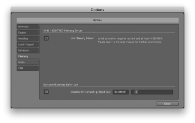</a></p>
<p>Vienna Instruments (Pro) has a similar setting in its options, accessible by clicking the little gearwheel icon:</p>
<p><a href="../../../?attachment_id=1771" rel="attachment wp-att-1771">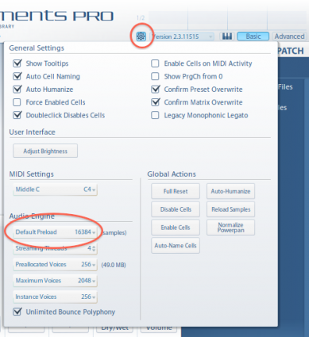</a></p>
<p>Again experiment with the settings to see what works for you.</p>
<p>&nbsp;</p>
<h3>3) Switching off unused or unnecessary articulations/mic positions:</h3>
<p>Sounds painfully obvious: It makes no sense to have stuff running you never need. If possible, switch off any articulations you do not need. Many sample libraries allow you to unload unused articulation directly within the plugin GUI. If that does not work, use the „Purge all“ feature if such a feature is present in the sampler you are using. Kontakt, for example, has this ability: Click „Purge all samples“ in the purge menu and Kontakt will unload all samples. Samples will then be reloaded while you use the instruments on a „need to“ basis.</p>
<p><a href="../../../?attachment_id=1769" rel="attachment wp-att-1769">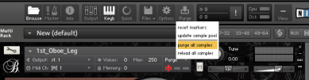</a></p>
<p>If you are using reasonably fast hard drives, or even SSDs, this process should be instantaneous. In any case, it saves you a ton of loading times after reloading the project and you can be sure that only the samples really needed in the project use up memory.</p>
<p>Most libraries also have the ability to unload unused microphone positions. Especially if you are using a 3<sup>rd</sup> party reverb quite heavily, switching off highly reverberated samples with lots of room information can not only save you a lot of memory, but also make your mix less cluttered. If you have a rather wet library or microphone position (i.e. one with lots of room information bakes into the samples), after applying a reverb, you basically have two rooms at the same time: The room where the samples were recorded and the room your reverb adds. Especially when using special positioning and reverberation tools such as VSL MIR Pro with 3<sup>rd</sup> party sample libraries, it is often a good idea to only use the close microphone position, if one is available. VSL MIR in particular works best with extremely dry samples.</p>
<p>&nbsp;</p>
<p>Both tips 2 and 3 do not directly influence CPU load, but they do indirectly: With a lower preload buffer, CPU load will increase a tiny bit because more stuff needs to be loaded. This effect, however, is negligible in most cases. Having less articulations loaded reduces the amount of samples that need to be loaded. And reducing the number of active microphone positions means less samples need to by played at the same time when pressing a key.</p>
<p>&nbsp;</p>
<h3>4) Only switch on multicore support for one host:</h3>
<p>Most hosting applications and samplers today have multicore support. That means that they will intelligently balance their workload over all available cores of your machine. Some also allow you to specify a number of cores for the application to use. While this in theory is all nice and well, the cold harsh reality quickly shows that these multicore balancing features tend to get in each others way. One practical example: If you host Kontakt 5 within VE Pro 5, by default, both applications have multicore support enabled. It is my experience that CPU consumptil will drop noticeably when you either switch off multiprocessing in Kontakt, or alternatively in VE Pro. In my experience, setting VE Pro to use 2 threads per instance and switching off Kontakt’s multicore support works best, but you should definitely try this for yourself!</p>
<p>You can find the relevant settings in VE Pro’s and Kontakt’s Options:</p>
<p><a href="../../../?attachment_id=1770" rel="attachment wp-att-1770">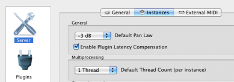</a></p>
<p><a href="../../../?attachment_id=1767" rel="attachment wp-att-1767">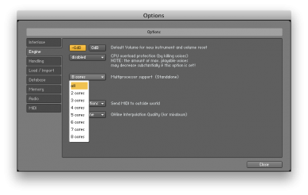</a></p>
<p>Especially on OSX, if your VE Pro instances consume 10-20% CPU per instance when doing absolutely nothing, this will most likely solve the issue! I have so far not seen any performance impact by switching off multicore support &#8211; on the contrary. If you are running parts of your template in the DAW, make sure to experiment a lot with different multicore settings: Having both VE Pro (or any other host) as well as your sequencer running, both of them probably offering support for threads, it might even make sense to deactivate multiprocessing support completely in the sequencer. I have made very good experiences doing that with Cubase, especially on the Mac.</p>
<p>&nbsp;</p>
<h3>5) Bonus Cubase Tip: Use only 8 MIDI ports for VST3:</h3>
<p>This one curiously enough has crept up at least a dozen times in the last two weeks: Many people using Cubase with very large templates have only two or three VE Pro instances, because the VST3 version of VE Pro allows the use of multiple MIDI ports. Consequently, they use a lot of ports &#8211; the highest I have seen was 64 MIDI ports per instance.</p>
<p>(Let us briefly hold a minute’s silence for all Logic and DP users out there stuck with just 1 MIDI port as part of the Audio Unit plugin standard. Ok, minute over.)</p>
<p>Cubase users with lots of MIDI ports face the issue that their templates will take ages to load. This is due to a behaviour of Cubase that makes it take a very long time to initialize any VST3 plugin that exceeds 8 MIDI ports. What I have heard is that Cubase somehow initializes all the additional ports and checks their allocations. The first eight MIDI ports are not treated this way. This is why it makes sense to only use 8 MIDI ports per VE Pro instance and in order to be able to have the number of instruments required, use more instances with 8 ports instead of just a few instances with 64 ports.</p>
<p>As far as I can tell, only Cubase shows this behaviour. Users of Studio One (which is also able to use VST3 plugins) can use 64 ports without overly long loading times.</p>
<p>&nbsp;</p>
<p>&nbsp;</p>
<p>I hope you found this article informative. In due course there will be a second one with some planning advice for templates, as promised earlier. Post your feedback and questions in the comments and I’ll be happy to address it.</p>
 <!-- WP Biographia v3.3.2 -->
<div class="wp-biographia-container-top" style="background-color: #eadcdc; border-top: 4px solid #000000;"><div class="wp-biographia-pic" style="height:100px; width:100px;"></div><div class="wp-biographia-text"><h3><a href=".." title="Tobias Escher">Tobias Escher</a></h3><p>Based in Germany, Tobias J. Escher serves as Director of Technology for SCOREcast's European division. He is an educator in the field of media music and technology, and combines his classical training with his passion for music technology as a freelance composer and orchestrator. Tobias works closely with a number of software manufacturers as well as a technical administrator at the <i>University of Mainz</i>, where he graduated with an M.A. degree in Musicology and Anglophone Languages in 2012. He is also one of the founders of the <i>Unofficial Sibelius Wiki</i> and demonstrates Sibelius as an Avid artist.</p><div class="wp-biographia-links"><small><ul class="wp-biographia-list wp-biographia-list-icon"><li><a href="http://www.novatlan-sound.de" target="_blank" title="Tobias Escher On The Web" class="wp-biographia-link-icon"></a></li><li><a href="https://twitter.com/#!/NovatlanSound" target="_blank" title="Tobias Escher On Twitter" class="wp-biographia-link-icon"></a></li><li><a href="http://facebook.com/NovatlanSound" target="_blank" title="Tobias Escher On Facebook" class="wp-biographia-link-icon"></a></li><li><a href="39033404" target="_blank" title="Tobias Escher On LinkedIn" class="wp-biographia-link-icon"></a></li><li><a href="http://www.youtube.com/user/NovatlanSound" target="_blank" title="Tobias Escher On YouTube" class="wp-biographia-link-icon"></a></li><li><a href=".." target="_blank" title="More Posts By Tobias Escher" class="wp-biographia-link-icon"></a></li></ul></small></div></div></div><!-- WP Biographia v3.3.2 -->
]]></content:encoded>
			<wfw:commentRss>../../../2012/09/26/optimizing-load-distribution-for-large-templates/feed/</wfw:commentRss>
		<slash:comments>6</slash:comments>
	<post-id xmlns="com-wordpress:feed-additions:1">1739</post-id>	</item>
		<item>
		<title>Gear Alert: Sonokinetic releases BAGIPES for UVI</title>
		<link>../../../2012/09/21/gear-alert-sonokinetic-releases-bagipes-for-uvi/</link>
		<comments>../../../2012/09/21/gear-alert-sonokinetic-releases-bagipes-for-uvi/#respond</comments>
		<pubDate>Fri, 21 Sep 2012 13:00:00 +0000</pubDate>
		<dc:creator><![CDATA[Tobias Escher]]></dc:creator>
				<category><![CDATA[Latest Resources]]></category>
		<category><![CDATA[Technology]]></category>
		<category><![CDATA[gear]]></category>

		<guid isPermaLink="false">../../../?p=1772</guid>
		<description><![CDATA[With their release of BAGPIPES, Sonokinetic are supporting the UVI platform for the first time. The collection of four bagpipes from different European regions is available as a digital download.]]></description>
				<content:encoded><![CDATA[<h3>Sonokinetic has released &#8220;BAGPIPES &#8211; 4 European Bagpipes&#8221;, a collection of four bagpipes from various regions of Europe.</h3>
<p>According to the developer, the library &#8220;incorporates several Sonokinetic signature features such as Intelligent Tempo Mapping, Performance-Articulation combination and tempo-sync bypass options. The bagpipes are recorded as dry as possible allowing for ultimate flexibility with mixing and placement. We have provided an authentic Impulse Response within the interface for a realistic pipe reproduction.“</p>
<p>With over 3000 samples and about 3.1 GB of sample content, BAGPIPES offers four instruments from different regions: Belgium (Muchosa), Lowlands (Doedelzak), Spain (Galiza), and Scotland (G Highland). The library also offers tempo-synced phrases, pitched in every key as well as legato scripting.</p>
<p>Apart from its musical capabilities, BAGPIPES also stands out as Sonokinetic’s first new release to exclusively use the UVI Engine. The company states: &#8220;The instrument itself runs in the free UVI Workstation or full version of MachFive. This means that we can present more realistic tempo-synced and timelocked phrases than ever before, utilizing the powerful algorithms of MOTU playback engines.&#8221; This release is not compatible with the Kontakt 5 sampler, but instead is exclusive to the UVI platform.</p>
<p>Together with BAGPIPES, Sonokinetic also released a new version of their CAROUSEL fairground organ library for UVI Workstation and MOTU MachFive.</p>
<p>BAGPIPES retails for 79.90€ and is available from <a title="Sonokinetic" href="http://www.sonokinetic.com" target="_blank">Sonokinetic’s website</a> as a digital download. The library requires an iLok USB Key for copy protection.</p>
<p><a href="../../../?attachment_id=1773" rel="attachment wp-att-1773"></a></p>
 <!-- WP Biographia v3.3.2 -->
<div class="wp-biographia-container-top" style="background-color: #eadcdc; border-top: 4px solid #000000;"><div class="wp-biographia-pic" style="height:100px; width:100px;"></div><div class="wp-biographia-text"><h3><a href=".." title="Tobias Escher">Tobias Escher</a></h3><p>Based in Germany, Tobias J. Escher serves as Director of Technology for SCOREcast's European division. He is an educator in the field of media music and technology, and combines his classical training with his passion for music technology as a freelance composer and orchestrator. Tobias works closely with a number of software manufacturers as well as a technical administrator at the <i>University of Mainz</i>, where he graduated with an M.A. degree in Musicology and Anglophone Languages in 2012. He is also one of the founders of the <i>Unofficial Sibelius Wiki</i> and demonstrates Sibelius as an Avid artist.</p><div class="wp-biographia-links"><small><ul class="wp-biographia-list wp-biographia-list-icon"><li><a href="http://www.novatlan-sound.de" target="_blank" title="Tobias Escher On The Web" class="wp-biographia-link-icon"></a></li><li><a href="https://twitter.com/#!/NovatlanSound" target="_blank" title="Tobias Escher On Twitter" class="wp-biographia-link-icon"></a></li><li><a href="http://facebook.com/NovatlanSound" target="_blank" title="Tobias Escher On Facebook" class="wp-biographia-link-icon"></a></li><li><a href="39033404" target="_blank" title="Tobias Escher On LinkedIn" class="wp-biographia-link-icon"></a></li><li><a href="http://www.youtube.com/user/NovatlanSound" target="_blank" title="Tobias Escher On YouTube" class="wp-biographia-link-icon"></a></li><li><a href=".." target="_blank" title="More Posts By Tobias Escher" class="wp-biographia-link-icon"></a></li></ul></small></div></div></div><!-- WP Biographia v3.3.2 -->
]]></content:encoded>
			<wfw:commentRss>../../../2012/09/21/gear-alert-sonokinetic-releases-bagipes-for-uvi/feed/</wfw:commentRss>
		<slash:comments>0</slash:comments>
	<post-id xmlns="com-wordpress:feed-additions:1">1772</post-id>	</item>
		<item>
		<title>Review: Cinematic Strings 2.0</title>
		<link>../../../2012/06/16/review-cinematic-strings-2-0/</link>
		<comments>../../../2012/06/16/review-cinematic-strings-2-0/#comments</comments>
		<pubDate>Sat, 16 Jun 2012 13:00:11 +0000</pubDate>
		<dc:creator><![CDATA[Tobias Escher]]></dc:creator>
				<category><![CDATA[Gear]]></category>
		<category><![CDATA[gear]]></category>

		<guid isPermaLink="false">../../../?p=1539</guid>
		<description><![CDATA[For some reason, Cinematic Strings has led a quiet existence since its release. One of the big all-round string libraries, Cinematic Strings 2.0 now ventures to bring great sounding strings to everyone. Here's our take on the Kontakt Player-based library.]]></description>
				<content:encoded><![CDATA[<p>There is not doubt strings form a very important part in almost anything you might want to do in an orchestral piece. They can deliver soaring lines, doubled in octaves, play rhythmic accents, provide background textures ranging from fragile harmonics to a brooding tremolo and, last but not least, they are capable of a huge array of special effects. That’s quite a bit. It is no wonder strings have been very well represented in the sampling world from day one, so to speak. When looking at what the market has to offer, we may group the available libraries into two factions: „All but the kitchen sink“ and „special intentions“. The first group of libraries has everything you might wish for. Special articulations, con sordino, harmonics, runs, trills &#8211; you name it. The downside of having such a high number of articulations and bells and whistles usually is a large number of patches, making it hard to harness the sheer power. The other group is focused on special purposes, like a specific sound, or to provide mainly runs or other effects. These usually score with their ease of use and are perfect tools for what they are intended for.</p>
<p>One library category I find most interesting is what I call a „workhorse library“. Such a library should provide basic articulations for the kind of tasks a composer encounters all day long. There are quite a few of these in the string world, the most famous probably being AudioBro L.A. Scoring Strings with a host of features, divisi and lots of other goodies. And then, there is L.A.S.S Lite, with a single microphone position, no divisi, but the real L.A.S.S. sound. What, to me, was missing up to now is a big symphonic library suitable for laying out tracks live, accessible without complicated programming, yet powerful enough to really be the foundation of a track. But there’s a new kid on the block &#8211; or rather a kid that has been living here for quite some time, sometimes without even being noticed. This is the all-new Cinematic Strings 2.0 Kontakt Player-powered library &#8211; let’s see how it performs!</p>
<p>&nbsp;</p>
<h1>Overview</h1>
<p>Cinematic Strings wants to be a „realistic mockup tool, and an inspiring instrument &#8211; which will save you from all the hassle and wasted time spent tweaking parameters, modifying CC data, or applying drastic EQ and reverb effects“, says the website. This perfectly fits my „workhorse library“ idea: Lay down tracks for mockups in real time with no need of spending ages tweaking CCs. A bold statement &#8211; and one most libraries put on their packaging. But indeed Cinematic Strings has a pretty unique approach to organizing the content of the library: After installing and registering the library in the Native Instruments Service Center or in the Kontakt 5 Player, you end up with a single instruments folder containing exactly five (f-i-v-e) patches, one per section. There are no multis and no single-articulation patches, just one patch each for 1<sup>st</sup> Violins, 2<sup>nd</sup> Violins, Violas, Cellos and Basses. We will look at the included articulations in greater detail later on. There are three mic positions (close, stage and room) as well as a pre-mixed position which is great for saving memory. Having just one patch per instrument makes a great UI an absolute must for the library and I have to say I was absolutely stunned by the beauty and functionality of the UI.</p>
<p><a href="../../../2012/06/16/review-cinematic-strings-2-0/cs_matrix" rel="attachment wp-att-1542">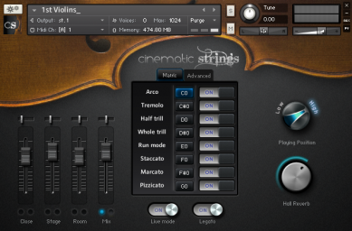</a></p>
<p>The interface is the same for all sections, as are all the features. Let us have a look at the 1<sup>st</sup> Violins. Upon loading a patch, you are greeted with a beautifully clean tabbed interface. The „Matrix“ tab is displayed by default, which houses a list of the available articulations. You can deactivate any articulations you do not need and they will be unloaded from memory. Creating your own patches for individual articulations is as easy as unloading everything but the one articulation you want to have and saving the patch under a new name. Switching between articulations is done via keyswitches for all loaded articulations. Neat thing: When you unload an articulation, its keyswitch will vanish from Kontakt’s virtual keyboard. This is very handy for seeing at a quick glance which keyswitches are actually in use. Shift-Clicking on any of the keyswitches allows you to reassign it with a list of current assignments displayed:</p>
<p><a href="../../../2012/06/16/review-cinematic-strings-2-0/cs_reassign" rel="attachment wp-att-1543">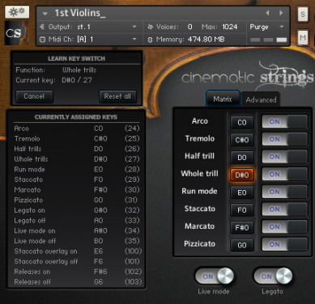</a></p>
<p>Cinematic Strings offers a monophonic legato mode with recorded legato transitions between notes. If you want to play chords, you need to deactivate this mode with the legato switch (assigned to A0 by default). The Live mode inserts „imperfect“ samples while you play, making the performance sound more natural. Players are slightly out of tune or miss a beat and things like that. Of course you can deactivate this if you wish. The matrix tab also hosts a knob for selecting the playing position (for sustained samples) or the note length (for short notes). On the staccato articulation, this dial lets you make the staccatos even shorter (staccatissimo). The playing position dial is a great way to shape your sound: The string a note is played on really makes a big difference in terms of sound! Finally you have a dial for the included reverb.</p>
<p>The left side of the interface hosts the volume sliders for the individual microphone positions. You can load and unload additional positions or solo a single position. There are panning controls and of course you can adjust the individual volume of each position.</p>
<p><a href="../../../2012/06/16/review-cinematic-strings-2-0/cs_advanced" rel="attachment wp-att-1541">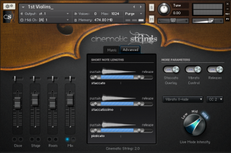</a></p>
<p>In the Advanced tab of the GUI you can adjust sustain and release lengths for all short articulations (staccato, staccatissimo and pizzicato) individually with dedicated sliders. This makes it possible to program custom patches for specific purposes, like a very short staccatissimo patch with very quick release for lightning-fast playing without the sound becoming muddy. The Advanced page also lets you switch on or off the Staccato overlay (while playing sustain, higher velocities trigger a staccato sample &#8211; more about that later), the vibrato control as well as toggling on or off the use of release samples. Last but not least, you can assign CCs to Velocity and Vibrato Crossfade here as well as control the intensity of the live mode (how much „wrong“ playing is inserted in your performance).</p>
<p>As far as VI GUIs go, to me Cinematic Strings is the best I have ever seen. The clean and concise layout of the interface makes accessing all features a breeze and really sets this library apart!</p>
<p>&nbsp;</p>
<h1>Use</h1>
<p>Having just five patches, CS heavily relies on scripting and keyswitches to get the job done. Just as it is with the general UI, the patches are all used in exactly the same way. So before finally looking at how the library sounds in the next section, will now deal with how you get Cinematic Strings to play what you want.</p>
<p>You choose between different articulations via keyswitches, with some of the articulations having what may be called „sub-articulations“, supplementing the actual articulation. Here’s what you get:</p>
<p>Arco: By default this is set to play monophonic legato, but you can deactivate the legato mode to play polyphonic, resulting in (to my ear) a loss of presence and character in the sound. For any monophonic lines you should activate the legato mode. The arco mode has a special feature that once was very popular with sampled instruments: Staccato overlay. If activated, higher keyboard velocities will trigger a staccato sample when playing any note. This is extremely useful for playing lines with mostly legato notes, but also some shorter notes. General playing velocity is controlled by the modwheel (assignable, if you wish so), so you can adjust the general velocity with the modwheel and play staccato samples as needed simply by pressing down the keys on your MIDI keyboard a bit harder. It works beautifully and when I tried it out I really wondered why hardly anyone else is doing this, too. As shown before, there are keyswitches for the live mode, legato, staccato overlay and release samples. There is no controller defined by default for the playing position dial, but you can assign a CC via MIDI automation. To me, the greatest feature of the arco articulation is the controllable vibrato. Assigned to CC2 (breath controller) by default, this lets you set the strength of the vibrato by morphing through a number of layers. Neat thing: The library actually only loads the layers when you need them, saving resources.</p>
<p>Tremolo, Half Trill and Whole Trill do exactly what it says on the packaging. Again sampled with four dynamic layers, as is the case with all articulations, they morph through these layers with the modwheel. You cannot choose a playing position for these, but live mode and even legato transitions work great! Having real legato for these articulations to me is a big plus for realism.</p>
<p>On the „shorts“ side, you have Staccato, Marcato and Pizzicato. The Staccato articulation lets you play staccatissimo by moving a dial and, as mentioned before, you can adjust the attack and release of those samples in the Advanced tab. Velocity if controlled by key velocity here. Last, there is the Run mode articulation, intended for playing very fast string runs. In this mode, notes connect together very well when playing fast, so most of the time you can get away with it for runs quite well.</p>
<p>Using a combination of keyswitches the modwheel/key velocity and a few CCs, for example for vibrato control, it is possible to play almost anything in real time. All patches work in exactly the same way, so you do not need to learn different controls. When loading a patch, it takes quite a while for Kontakt to find all the samples. But there is a very easy fix for this: Just &#8220;batch resave&#8221; the library once and subsequent loading will be instantaneous. This, by the way, works with about every library on the market. Memory consumption is about 470 MB per section with all articulations of the Mix microphone position loaded. That means loading all patches at once will use about 2.2 GB of RAM, which is pretty good considering what you get. If you load a patch more than once (for example the arco articulation with legato switched on in one Kontakt slot and with legato switched off in another) the two patches share the sample pool.</p>
<p>There sadly are no harmonics or con sordino samples. Cinematic Strings also does not have divisi capabilities.</p>
<p>&nbsp;</p>
<h1>Sound</h1>
<p>Now the interesting stuff you have been waiting for: <em>the sound</em>. Cinematic Strings really sounds cinematic, just as it says on the box (of course there is no box, but you know what I mean). Here are some short demos. As usual in my reviews, this is 100% live — no editing, no extra effects apart from some compression. Just the pure sound of the library. For polished demos and whole pieces check out the demos on the official page. The composition of the pieces alone is worth a listen.</p>
<p>Our first example is a short Violin I arco phrase. Legato is switched on, as is the live mode. CS’s own reverb is used, no third party processing whatsoever. The legato line is followed by a short tremolo phrase. Note that the dynamics react very strongly to any movement of the modwheel &#8211; a tad too strongly for my taste.</p>
<p><iframe src="http://w.soundcloud.com/player/?url=http%3A%2F%2Fapi.soundcloud.com%2Ftracks%2F49713838&amp;auto_play=false&amp;show_artwork=true&amp;color=c12027" frameborder="no" scrolling="no" width="100%" height="166"></iframe></p>
<p>The second violins have graciously agreed to play a short run for us in the next example. This is a dedicated articulation which plays note transitions between notes. It works quite well, but obviously real recorded runs sound still better. The staccato articulation has a nice bite to it. I chose a short rhythmic pattern with some dynamic variation. Again everything out of the box, the ambience you hear is in the samples, though if you want to you can use the very dry close mics.</p>
<p><iframe src="http://w.soundcloud.com/player/?url=http%3A%2F%2Fapi.soundcloud.com%2Ftracks%2F49713952&amp;auto_play=false&amp;show_artwork=true&amp;color=c12027" frameborder="no" scrolling="no" width="100%" height="166"></iframe></p>
<p>Here is a single long note played senza vibrato with the vibrato gradually being introduced. The rate of the vibrato is fully controllable via a MIDI CC. At the end of the mp3, there is a short line played with varying amount of vibrato.</p>
<p><iframe src="http://w.soundcloud.com/player/?url=http%3A%2F%2Fapi.soundcloud.com%2Ftracks%2F49714387&amp;auto_play=false&amp;show_artwork=true&amp;color=c12027" frameborder="no" scrolling="no" width="100%" height="166"></iframe></p>
<p>The Viola section demonstrates the huge different in sound the legato mode makes. The same line is first played with the legato switch set to „on“, then a second time with it set to „off“. The MIDI data itself is absolutely identical, the difference in sound really only comes from the absence of legato samples the second time.</p>
<p><iframe src="http://w.soundcloud.com/player/?url=http%3A%2F%2Fapi.soundcloud.com%2Ftracks%2F49713580&amp;auto_play=false&amp;show_artwork=true&amp;color=c12027" frameborder="no" scrolling="no" width="100%" height="166"></iframe></p>
<p>Finally, the Cellos prove their versatility with a short staccato phrase, followed by some pizzicatos. I liked the pizzicatos very much. They cut through the mix, but still sound very much like the real thing without being overly bright or harsh.</p>
<p><iframe src="http://w.soundcloud.com/player/?url=http%3A%2F%2Fapi.soundcloud.com%2Ftracks%2F49713687&amp;auto_play=false&amp;show_artwork=true&amp;color=c12027" frameborder="no" scrolling="no" width="100%" height="166"></iframe></p>
<h1>Final Thoughts</h1>
<p>The sound of Cinematic Strings 2.0 is superb. The cellos in particular have a very nice bite and work in all possible situations. The one thing that really drives this library home is the ease of use. One patch per section, all articulations and controls immediately accessible. The interface is a joy to look at and makes every function very clear. If I really wanted to find any downside to Cinematic Strings, it would be its limited set of articulations. You really only get the essential stuff: No con sordino, no divisi; but then the direct contenders (mainly LASS Lite) do not have divisi, either.</p>
<p>In practical use it boils down to this: If you need (another) great sounding string ensemble library with a great sound and put ease of use over having tons of articulations, then this one is for you. If you have everything you could want in term of strings, I still think you might benefit from having the „Cinematic Strings sound“ as you go-to package for quick mockups and sketches. For divisi and con sordino you will need to look elsewhere, but for all the basic stuff, CS will serve you extremely well. Unless you specifically need special articulations in your score, there is nothing at all in the sound that would make you want to replace your CS-powered lines anywhere in the process. As a string workhorse library, Cinematic Strings is for me the best you can get when looking at both sound and usability.</p>
 <!-- WP Biographia v3.3.2 -->
<div class="wp-biographia-container-top" style="background-color: #eadcdc; border-top: 4px solid #000000;"><div class="wp-biographia-pic" style="height:100px; width:100px;"></div><div class="wp-biographia-text"><h3><a href=".." title="Tobias Escher">Tobias Escher</a></h3><p>Based in Germany, Tobias J. Escher serves as Director of Technology for SCOREcast's European division. He is an educator in the field of media music and technology, and combines his classical training with his passion for music technology as a freelance composer and orchestrator. Tobias works closely with a number of software manufacturers as well as a technical administrator at the <i>University of Mainz</i>, where he graduated with an M.A. degree in Musicology and Anglophone Languages in 2012. He is also one of the founders of the <i>Unofficial Sibelius Wiki</i> and demonstrates Sibelius as an Avid artist.</p><div class="wp-biographia-links"><small><ul class="wp-biographia-list wp-biographia-list-icon"><li><a href="http://www.novatlan-sound.de" target="_blank" title="Tobias Escher On The Web" class="wp-biographia-link-icon"></a></li><li><a href="https://twitter.com/#!/NovatlanSound" target="_blank" title="Tobias Escher On Twitter" class="wp-biographia-link-icon"></a></li><li><a href="http://facebook.com/NovatlanSound" target="_blank" title="Tobias Escher On Facebook" class="wp-biographia-link-icon"></a></li><li><a href="39033404" target="_blank" title="Tobias Escher On LinkedIn" class="wp-biographia-link-icon"></a></li><li><a href="http://www.youtube.com/user/NovatlanSound" target="_blank" title="Tobias Escher On YouTube" class="wp-biographia-link-icon"></a></li><li><a href=".." target="_blank" title="More Posts By Tobias Escher" class="wp-biographia-link-icon"></a></li></ul></small></div></div></div><!-- WP Biographia v3.3.2 -->
]]></content:encoded>
			<wfw:commentRss>../../../2012/06/16/review-cinematic-strings-2-0/feed/</wfw:commentRss>
		<slash:comments>2</slash:comments>
	<post-id xmlns="com-wordpress:feed-additions:1">1539</post-id>	</item>
		<item>
		<title>Review: ProjectSAM Orchestral Essentials</title>
		<link>../../../2012/04/23/review-projectsam-orchestral-essentials/</link>
		<comments>../../../2012/04/23/review-projectsam-orchestral-essentials/#comments</comments>
		<pubDate>Mon, 23 Apr 2012 13:00:59 +0000</pubDate>
		<dc:creator><![CDATA[Tobias Escher]]></dc:creator>
				<category><![CDATA[Gear]]></category>
		<category><![CDATA[gear]]></category>

		<guid isPermaLink="false">../../../?p=1488</guid>
		<description><![CDATA[If you are on the hunt for a versatile ensemble library, either to complement your other libraries or as a workhorse for a portable rig, you might want to take a look at ProjectSAM's latest beast, Orchestral Essentials.]]></description>
				<content:encoded><![CDATA[<p><a href="http://www.projectsam.com/" target="_blank">ProjectSAM</a>, with their catchphrase &#8220;cinematic sampling&#8221;, have become <em>the place</em> to go for libraries tailored to allowing composers to crank out insane amounts of music in a ridiculously low amount of time. Symphobia 1 and 2 are perfect examples of this goal. True Strike 1 and 2 are among the most favorite drum libraries on the market and other smaller products are filling some more niches. Such a product range simply calls of a &#8220;best of ProjectSAM&#8221;. With <a href="http://www.projectsam.com/Products/Feature-Products/1403" target="_blank">Orchestral Essentials</a>, here it is. With a twist.</p>
<p>Orchestral Essentials aims to provide a comprehensive set of essential orchestral sections with basic articulations, a good amount of percussion and some nice goodies on the side. The content for the most part comes from the aforementioned ProjectSAM libraries, but has been reorganised and extended with some new material for this product. Orchestral Essentials follows the concept already established by the two Symphobia libraries: Instead of providing single instruments, the library has combined section recordings, with a few exceptions. Everything is neatly organised into categories.</p>
<p><a href="../../../2012/04/23/review-projectsam-orchestral-essentials/oe_librarytab" rel="attachment wp-att-1506"></a></p>
<p>&nbsp;</p>
<h1>General UI</h1>
<p>ProjectSAM has done an interesting job on the UI side of the library. The whole interface looks a bit like a hologram straight out of a SciFi movie. Depending on your taste this is either a good or a bad thing. I like it &#8211; nice departure from the realistic or no-nonsense GUIs we have come to see in the past. No matter which patch you load, you will always have a big OE logo in the middle, parameter rotary encoders on the right and patch-specific options on the left. Tabs at the bottom of the patch window let you switch between the adjustable settings. Because most of the patches have identical features, we will now look at these general capabilities of the library and later deal with individual patches.</p>
<p>&nbsp;</p>
<h2>Main Tab:</h2>
<p>On all patches, rotary encoders on the main page let you control the amount of reverb applied to the patch (sounds great!), the limiter input (how hard the built-in compressor kicks in) and the attack and release times. The left of the patch window depending on the type of patch you have loaded let you switch on or off the use of round robin samples, the octaver (playing every note you play an octave higher in addition to the pitch you played) and the velocity switch. This switch lets you choose your preferred method of velocity selection: Either by key velocity (how hard you press the keys) or by modwheel. I have to say I just love this feature. It is only available on sustain patches and is extremely useful for playing in a line with your MIDI keyboard in key velocity mode to get it roughly right, later switching to modwheel and dialing in the perfect velocities with a dedicated fader. Also this is where you can find the enhance switch, which adds additional recordings on top of the samples. Not all patches have this features, but those that do really shine!</p>
<p><a href="../../../2012/04/23/review-projectsam-orchestral-essentials/oe_patch" rel="attachment wp-att-1503"></a></p>
<h2></h2>
<h2></h2>
<h2>Settings Tab:</h2>
<p>This tab has controls for release trails, ADSR (attack, decay, sustain, release) and tail length.</p>
<p>&nbsp;</p>
<h2>EQ Tab:</h2>
<p>OE has a built-in EQ, which is activated by standard. On this tab you can deactivate it and adjust high, mid and low gain independently.</p>
<p>&nbsp;</p>
<h2>Effects Tab:</h2>
<p>The effects tab has a compressor, delay, a filter and a stereo modeller. You can switch all of these on or off as you please and adjust a number of settings. Clicking on the effect name highlights it and displays the parameters that can be adjusted. All the effects work fairly well, but are probably the one thing you might more or less ignore in your daily use if you mainly write purely orchestral music. If you like to tweak your sounds a bit, this is the place to go, though!</p>
<div><a href="../../../2012/04/23/review-projectsam-orchestral-essentials/oe_fx" rel="attachment wp-att-1502"></a></div>
<div></div>
<h2></h2>
<h2>Seating Tab:</h2>
<p>The seating chart shows you not only where each instrument is sitting in the orchestra, but also which instruments are used in the current patch and, if the patch has an enhance button, what the button actually adds in terms of additional instruments. And, as the manual correctly states, the chart just looks damn cool.</p>
<p></p>
<p>&nbsp;</p>
<h1>Strings</h1>
<p>The strings category has five ensemble patches, spanning the whole string range from double bass to violin: Arco (sustain), Staccato, Tremolo, Pizzicato and Cinematic Effects. While the former are self-explanatory, the latter is quite interesting and contains a number of string effects like atonal swells, stings and risers, random pizzicati, and so on. The material is very suitable for the scary and creepy moments in your scores. All patches come with velocity control and are very playable out of the box with nice standard EQ settings (which you can deactivate if you choose to do so).</p>
<p>A sixth patch in the strings category has Legato Violins together with flutes. I found this patch to be very versatile and great for melodic lines. Unfortunately, its range from A2 to G4 is very small, making it sometimes difficult to use. The patch is monophonic, so you cannot play more than one note at any time. This holds true for all legato patches in the library, so you really need to plan carefully to stay within the instrument ranges.</p>
<p>An example says more than a thousand words, so here is a short audio demo of the string patches. No editing, no external effects, just the out of the box sound played live.</p>
<p><iframe src="http://w.soundcloud.com/player/?url=http%3A%2F%2Fapi.soundcloud.com%2Ftracks%2F44069195&amp;auto_play=false&amp;show_artwork=true&amp;color=ff0400" frameborder="no" scrolling="no" width="100%" height="166"></iframe></p>
<p>&nbsp;</p>
<h1>Brass</h1>
<p>The brass category is similar in scope to what can be found in the strings: A Long Notes patch provides sustained samples over the whole brass family. The ensemble (tube, trombones, french horns and trumpets) is sampled in multiple velocity layers, which you can seamlessly morph through with the modwheel. On the ff dynamic, OE’s brass has a very nice bite and is perfectly suited for powerful lines or sustained chords. The Staccato patch is programmed very well, with sharp attacks, which can be additionally tweaked with the attack knob in the interface. Similarly to the string category, the brass section has a Cinematic Effects patch. This patch has tonal and atonal rips and a host of other useful effects. Again the sounds really shine in the context of creepy/horror music, which falls in line with their counterparts in Symphobia 1 and 2.</p>
<p>There are solo trumpet, horn and trombone sustain patches, which allow you to write some non-ensemble lines &#8211; a welcome addition. Unfortunately, there no other articulations for these solo instruments. It is possible to get a decent enough faster attack with the attack knob, but this does not make up for the absence of staccato samples. As a bonus you also get a Legato Horns with Trombones patch. The patch, which appears to be a subset of the same patch from Symphobia 2 offers legato transitions and works extremely well for carrying melodic lines.</p>
<p>Here is an example of what you can expect in terms of sound from OE’s brass:</p>
<p><iframe src="http://w.soundcloud.com/player/?url=http%3A%2F%2Fapi.soundcloud.com%2Ftracks%2F44069190&amp;show_artwork=true" frameborder="no" scrolling="no" width="100%" height="166"></iframe></p>
<p>&nbsp;</p>
<h1>Woodwinds</h1>
<p>By now you should be able to predict what may await you in the woodwinds category &#8211; and you are right. Long Notes, Staccato, Cinematic Effects. Interestingly enough, the Long Notes patch does not allow to route velocity control to the modwheel. All the other Long Notes patches do this. When playing ensemble woodwind patches, Cinesamples’ brilliant Hollywoodwinds come to mind. OE’s winds in comparison are much quieter and more laid back. They work tremendously well for lyrical passages and have a very soft, but yet fast attack. For me, the woodwinds are one of the strongest aspects of OE.</p>
<p>There is a Legato Flutes with Clarinets patch. The patch sounds nice, but is very much centred on the flute, with the clarinets playing very quietly. Some ethnic flute phrases &#8211; think Lord of the Dance with a regular flute instead of Irish Whistle &#8211; add a nice touch to the woodwinds. Sadly, these are not tempo-synced. There’s also an Overblown Flute Staccato patch.</p>
<p>Here are some impressions from the woodwinds:</p>
<p><iframe src="http://w.soundcloud.com/player/?url=http%3A%2F%2Fapi.soundcloud.com%2Ftracks%2F44069196&amp;show_artwork=true" frameborder="no" scrolling="no" width="100%" height="166"></iframe></p>
<p>&nbsp;</p>
<h1>Percussion</h1>
<p>Taken from TrueStrike, the percussion section gives you the essentials: The orchestral percussion kit has everything but the kitchen sink, from snare drums to cymbals and in my experience works best as a sketching tool to later be replaced by dedicated samples. The timpani patch has nice-sounding single hits and does the trick in most instances. Similarly, you get a xylophone, glockenspiel and a celesta. The japanese kit and djembe ensemble serve as a good basis for ethnic cues, while the cinematic percussive effects patch has some nice timpani rolls, cymbal crashes and other effects.</p>
<p>All in all the percussion section lives up to what it says on the box: Essentials. You will find everything you need to do a quick mockup, but as a seasoned composer with a host of other libraries at your disposal you will most likely replace at least some of the percussion later on. What the percussion definitely does, though, is give you a very solid starting point for laying out ideas without having to delve through dozens of huge percussion libraries.</p>
<p><iframe src="http://w.soundcloud.com/player/?url=http%3A%2F%2Fapi.soundcloud.com%2Ftracks%2F44069194&amp;show_artwork=true" frameborder="no" scrolling="no" width="100%" height="166"></iframe></p>
<p>&nbsp;</p>
<h1>Keyboards &amp; Harp</h1>
<p>Orchestral Essentials includes three very nice keyboard instruments and a concert harp. The Piano Mystique is unique to the library and was not available in any other ProjectSAM library before. As the name suggests, it is a slightly quirky upright piano with a very warm sound. Even if you already have a good number of piano libraries, you will find this piano very useful. Besides, you can never have enough piano samples. The second instrument not taken from a previous product is the harpsichord. The sound is very clean and crystal clear, but to be this instrument lacks a bit of the punch of the real thing. This may be on purpose; after all the whole library leans a bit into the horror/mystery genre with the exception of some patches. Nevertheless if you need a harpsichord and do not have a dedicated library, this one will do the deed just fine.</p>
<p>As an organist, I tremendously enjoyed the Church Organ patch. Taken from the Organ Mystique library, this patch is a nice mf stop combination with very well-programmed samples. Attacks are just right and it feels and sounds great. For me this patch is one of the highlights of this library &#8211; which means a lot because all in all I am extremely satisfied with the overall product! The patch does not have a dedicated pedal range, so to write a real organ piece you would still need a full-featured library. But if you need pedal samples, you will probably also want to be able to change stops, so you need to look for a bigger library anyway.</p>
<p><iframe src="http://w.soundcloud.com/player/?url=http%3A%2F%2Fapi.soundcloud.com%2Ftracks%2F44069193&amp;show_artwork=true" frameborder="no" scrolling="no" width="100%" height="166"></iframe></p>
<p>Last but not least, Orchestral Essentials has a Concert Harp patch taken from the library with the same name. With a good dynamic range, this patch will be sufficient for basic sketching of harp parts. There are no glissandos and no special articulation, just the pluck patch. Given OE’s scope as an all-purpose library, this can hardly be criticized &#8211; and if you need more, there’s Concert Harp EXP, the bigger brother.</p>
<p>&nbsp;</p>
<h1>Full Orchestra</h1>
<p>Even though listed first in the instruments list, I saved this for last, because I genuinely think these patches are one of the best mockup tools you can get. I’ll tell you how I approach writing a cue: Either I sit down with a sheet of paper and a pencil (and an eraser) and write some sketches, or I do the same in Logic with a humble piano. More and more I have found myself to use custom-made multis in Kontakt or VI Pro for quick sketches of specific &#8220;compositional situations&#8221;. You know — the big &#8220;huge synth and string pad at the bottom, brass chords in the middle, string melody on top&#8221; kind of situation. The Full Orchestra patches sound exactly like some of those multis I painstakingly built &#8211; but at a fraction of memory use! Since getting Orchestral Essentials, they have become my number one tool for sketching out ideas.</p>
<p>The patches are named Action, Suspense, Epic, Dark Orchestra, Long Chords and Short Chords. The two chords patches have pre-arranged major and minor chords in all keys. If you are familiar Cinesamples’ CineOrch, you know how this works, only with a much more basic feature set. OE’s chord patches react to velocity, but even at the lowest velocity sound very fortissimo.</p>
<p>Basically you get ff chords from the full orchestra, with volume controlled by playing velocity. On the up-side, they are each only 3.6 MB (no typo!). For throwing in a quick pre-arranged chord in a great sounding voicing they are just perfect! Dark Orchestra is like a cinematic effects patch on steroids: More than sixty full orchestra rips, smears, swirls, pads and textures could tackle any horror scene without any help from other patches.</p>
<p><iframe src="http://w.soundcloud.com/player/?url=http%3A%2F%2Fapi.soundcloud.com%2Ftracks%2F44069191&amp;show_artwork=true" frameborder="no" scrolling="no" width="100%" height="166"></iframe></p>
<p>Action, Suspense and Epic, as their names suggest, are sonic templates. Weighing in at about 20-25MB per patch, they offer wonderfully orchestrated playable notes. With the epic patch you can literally play a decent rendition of any brass-heavy SciFi TV tune live. The enhance button adds the heavy brass; with enhance disabled you get strings and winds. As usual, the seating tab in the interface exactly tells you who is playing when. The suspense patch has string tremolos with some serious low end going on at the bottom notes, which is added with the enhance button. When trying it out the action patch, I could not help myself: I <em>had</em> to play &#8220;Pirates&#8221;. That’s how it sounds. The enhance button adds low piano stabs and big percussion, without enhance pressed you get full orchestra staccatos.</p>
<p>Here is an audio demo of the three patches:</p>
<p><iframe src="http://w.soundcloud.com/player/?url=http%3A%2F%2Fapi.soundcloud.com%2Ftracks%2F44069192&amp;show_artwork=true" frameborder="no" scrolling="no" width="100%" height="166"></iframe></p>
<p>&nbsp;</p>
<h1>Sound Design</h1>
<p>If you know ProjectSAM’s other libraries, you will be familiar with their Dystopia patches. These patches take samples from the library use them for all kinds of crazy sound design elements. They did the same in Orchestral Essentials and as usual, the results sound absolutely great. You get eight FX patches, each one meticulously programmed with the modwheel controlling filters. From disturbing distorted pulses to etheric string pads &#8211; everything is there!</p>
<p>&nbsp;</p>
<h1>Multis</h1>
<p>Orchestral Essentials comes with a number of multis, combining several patches from the library and spreading them over the keyboard. The same system is also used in Symphobia 1 and 2 and works extremely well. You really can lay down whole tracks with just a single multi. While using the same samples as the regular instrument patches, the multis are in fact completely unique in their programming and really sound completely different then any of the individual patches. Also the multis are completely new and not taken from any of the bigger products. Going with the spirit of the whole library, the multis are very dark and brooding with a large emphasis on sound design. There are some exceptions, but if you want sweeping melodies, these are not for you. But when looking for a specific texture to create suspenseful ambiences, OE’s multis are a great place to start looking for your sounds, regardless of how many other libraries you may have. One can easily see how much love ProjectSAM puts into coding these multis.</p>
<p>&nbsp;</p>
<h3>If you want more…</h3>
<p>One great thing about the library is that because of its genesis as a subset of other products, you can satisfy your craving for more by getting the other libraries. Obviously that makes sense with Symphobia and True Strike, but maybe even more in the case of the harp and the organ. If you like these patches, get the relatively inexpensive bigger products. In the case of the harp, this will also get you glissandos. And the full Organ Mystique has full control of the stops and three unique sounding instruments in one!</p>
<p>&nbsp;</p>
<h3>If you have stuff…</h3>
<p>On the other hand, if you already own one or more ProjectSAM libraries, you may be asking yourself: <em>Is it worth the price of admission?</em> In my opinion: Yes. Not only will you get a terrific collection of &#8220;best of&#8221; patches, all very well programmed and extremely light on resources, but you will also get a discount depending on the number of libraries you already own. I have both Symphobia libraries and enjoyed seeing the material in a trimmed-down form as a versatile all-purpose library. Using OE as your ensemble library of choice on a portable machine for quick mockups on the road may very well be worth the price of admission alone. Yes, almost all content was already present in other products, but ProjectSAM have managed to somehow create a new and appealing product, even though you technically already saw all the content before.</p>
<p>&nbsp;</p>
<h1>Final Thoughts</h1>
<p>Looking strictly at the included effects and special articulations, Orchestral Essentials works best on horror/suspense cues. The cinematic effects patches have some very scary and dissonant sounds, all of which sound simply spectacular. You will find very few tonal or even melodic effects in Orchestral Essentials, which is the only major flaw one could find in OE. The whole library just feels very dark. Of course, this comes in handy when you actually need to write in such a style. The general articulation patches (long, short and legato ensembles) obviously are suitable for every genre. For a library that sets out to provide &#8220;essentials&#8221;, some lighter content would have been a nice touch. This is remedied a bit by the fact that there are a lot of great libraries with more light-hearted content, so ProjectSAM’s product really fills a niche in this regard and are actually quite useful because of their darker tone.</p>
<p>If you are on the hunt for a versatile ensemble library, either to complement your other libraries or as a workhorse for a portable rig, you’ve found your ideal candidate for the job. ProjectSAM Orchestral Essentials sounds great, is very easy to use and with its enhance feature gives you a great way of sculpting your sound. The interface is strikingly different from what one normally sees, yet powerful with lots of tweakeable options. The library is very light on resources, has extremely short loading times and integrates effortlessly into any sonic palette.</p>
<p>If you already own all of ProjectSAM’s products, essentially what you will get is a basic subset of those libraries, with a common interface and the added bonus of the harpsichord and piano. The Full Orchestra patches work in a similar way to Symphobia’s multis, but by combining what used to be several single patches into one new one, resulting in quicker loading times. Even with all ProjectSAM products in your arsenal, Orchestral Essentials is of great use as a mockup tool or ensemble library for your portable machine.</p>
<p>If you only own a few or even none at all &#8211; what are you waiting for? Orchestral Essentials is your perfect low-cost ticket of admission into the world of ProjectSAM! Just keep in mind that for the true &#8220;Essence of Film Scoring&#8221;, you will need some additional melodic effects to really be ready for about anything that could possibly come your way composition-wise.</p>
<p>So that’s SCOREcast’s opinion on ProjectSAM Orchestral Essentials. If you have feedback, questions or anything else you want to voice, please post in the comments! Ask and thou shall receive an answer!</p>
 <!-- WP Biographia v3.3.2 -->
<div class="wp-biographia-container-top" style="background-color: #eadcdc; border-top: 4px solid #000000;"><div class="wp-biographia-pic" style="height:100px; width:100px;"></div><div class="wp-biographia-text"><h3><a href=".." title="Tobias Escher">Tobias Escher</a></h3><p>Based in Germany, Tobias J. Escher serves as Director of Technology for SCOREcast's European division. He is an educator in the field of media music and technology, and combines his classical training with his passion for music technology as a freelance composer and orchestrator. Tobias works closely with a number of software manufacturers as well as a technical administrator at the <i>University of Mainz</i>, where he graduated with an M.A. degree in Musicology and Anglophone Languages in 2012. He is also one of the founders of the <i>Unofficial Sibelius Wiki</i> and demonstrates Sibelius as an Avid artist.</p><div class="wp-biographia-links"><small><ul class="wp-biographia-list wp-biographia-list-icon"><li><a href="http://www.novatlan-sound.de" target="_blank" title="Tobias Escher On The Web" class="wp-biographia-link-icon"></a></li><li><a href="https://twitter.com/#!/NovatlanSound" target="_blank" title="Tobias Escher On Twitter" class="wp-biographia-link-icon"></a></li><li><a href="http://facebook.com/NovatlanSound" target="_blank" title="Tobias Escher On Facebook" class="wp-biographia-link-icon"></a></li><li><a href="39033404" target="_blank" title="Tobias Escher On LinkedIn" class="wp-biographia-link-icon"></a></li><li><a href="http://www.youtube.com/user/NovatlanSound" target="_blank" title="Tobias Escher On YouTube" class="wp-biographia-link-icon"></a></li><li><a href=".." target="_blank" title="More Posts By Tobias Escher" class="wp-biographia-link-icon"></a></li></ul></small></div></div></div><!-- WP Biographia v3.3.2 -->
]]></content:encoded>
			<wfw:commentRss>../../../2012/04/23/review-projectsam-orchestral-essentials/feed/</wfw:commentRss>
		<slash:comments>2</slash:comments>
	<post-id xmlns="com-wordpress:feed-additions:1">1488</post-id>	</item>
		<item>
		<title>PRESS RELEASE: Sample Logic releases Synergy X!</title>
		<link>../../../2012/04/09/press-release-sample-logic-releases-synergy-x/</link>
		<comments>../../../2012/04/09/press-release-sample-logic-releases-synergy-x/#respond</comments>
		<pubDate>Mon, 09 Apr 2012 14:29:05 +0000</pubDate>
		<dc:creator><![CDATA[Tobias Escher]]></dc:creator>
				<category><![CDATA[Technology]]></category>

		<guid isPermaLink="false">../../../?p=1494</guid>
		<description><![CDATA[Renowned developer Sample Logic has just announced Synergy X, a vast upgrade to their library with exciting new features. Read the official press release here.]]></description>
				<content:encoded><![CDATA[<h2>
Synergy Expands with the Power of X!</h2>
<p>Weighing in at over 20 Gigabytes, Sample Logic&#8217;s newly expanded Synergy X pushes the envelope far beyond today’s standard of music and sound design. This breathtaking collection of over <a href="../../../2012/04/09/press-release-sample-logic-releases-synergy-x/sl_logo" rel="attachment wp-att-1500"></a>1600 innovative instruments, tempo-synced loops, and jaw-dropping multis delivers the next generation of diverse cinematic sampling with a user interface designed to inspire. Powered by Native Instruments Kontakt Player engine, Synergy X utilizes extended sample synthesis and effectual techniques to provide you incredibly interactive, and ready-to-perform instruments. With X´s powerfully intuitive sound sculpting interface, enhanced control is in your hands. Simply put, all instruments can be modified, redesigned, and customized to your preference. This makes Synergy X perfect for any performance and production environment.</p>
<p>•        Multis</p>
<p>•        Ambience</p>
<p>•        Bass</p>
<p>•        Drums</p>
<p>•        Impacts</p>
<p>•        Melody</p>
<p>•        Pads</p>
<p>•        Rhythms</p>
<p>&nbsp;</p>
<h2>And it doesn&#8217;t stop there&#8230;</h2>
<p>Synergy X will become a permanent addition to your arsenal. We have gone to great lengths to capture and enhance the purist perception of sound from all over the world. The instruments and multis in X are organized by genre making it easy to dial up the sound you need without having to funnel through thousands of presets. This library is jam-packed with: serene spiritual textures, deep rooted dub basses, Pop &amp; Hip Hop flavored beats, haunting sonic environments, lush emotional tempo-synced pads, mind-blowing explosions, multi-sampled ethnic and tribal instruments, gated angelic voices, electronic arpeggiated synths, bone-chilling sequenced impacts, melodic bells and whistles, adventurous flutes, action and world rhythms, funky leads, gigantic pianos, and mallets from the tropics, just to name a few!</p>
<p></p>
<h2>Transform Your World!</h2>
<p>Bringing together the past, present and future, Synergy X transforms the original Synergy to a whole new world. Not only does this new release of X deliver fundamental loops, soundscapes, and textures, but it transcends the modern virtual instrument providing timeless ingredients for any music production or performance.</p>
<p>&nbsp;</p>
<h2>Getting GUI</h2>
<p>X&#8217;s spectacular user interface was designed with the composer and sound designer in mind, providing effortless control to sculpt each instrument to taste. Using our signature &#8220;core-effect sequencer&#8221; and multiple LFO options, transforming a static sound into a tempo-sync masterpiece is just one click away. Synergy X also harnesses the power of the &#8220;Arpeggigater&#8221;, which allows users to design custom gate sequencer patterns with effects simultaneously.  This extremely powerful addition allows for infinite sound-sculpting results.</p>
<p>&nbsp;</p>
<h2>System Requirements &amp; compatibility</h2>
<ul>
<li>Kontakt 5 Player &#8211; 5.0.2 or higher (free download) Also runs in the retail version of Kontakt 5.0.2 or higher.</li>
<li>Mac: Mac OS X 10.6 or 10.7 (latest update), Intel Core Duo (will not work in OS 10.5 or lower), 2 GB  RAM</li>
<li>PC: Windows 7 (latest Service Pack, 32/64 Bit), 2GB RAM</li>
<li>20GB of disk space for Synergy X library</li>
</ul>
<p>&nbsp;</p>
<h2>Tech Specs</h2>
<ul>
<li>20+ GB library (available via direct download only)</li>
<li>1600+ Instruments &amp; Multis</li>
<li>VST, AU, DXi, RTAS (Pro Tools 8 and higher), Standalone</li>
</ul>
<p>&nbsp;</p>
<h2>Bring it to the power of X!</h2>
<p>Direct Download available!</p>
<p>Synergy X MSRP: $399.99</p>
<p>Synergy X Customer Update: $60.00</p>
<p>&nbsp;</p>
<p>Synergy X Website: <a href="http://www.samplelogic.com/products/Synergy-x">www.samplelogic.com/products/Synergy-x</a></p>
<p>&nbsp;</p>
<h2>Additional Resources:</h2>
<p>Synergy X Trailer:<br />
<a href="http://youtu.be/0WAWZN3n36Y" target="_blank">http://youtu.be/0WAWZN3n36Y</a></p>
<p>Synergy X Multis In Action:<br />
<a href="http://youtu.be/AgghJ5RiaRs" target="_blank">http://youtu.be/AgghJ5RiaRs</a></p>
 <!-- WP Biographia v3.3.2 -->
<div class="wp-biographia-container-top" style="background-color: #eadcdc; border-top: 4px solid #000000;"><div class="wp-biographia-pic" style="height:100px; width:100px;"></div><div class="wp-biographia-text"><h3><a href=".." title="Tobias Escher">Tobias Escher</a></h3><p>Based in Germany, Tobias J. Escher serves as Director of Technology for SCOREcast's European division. He is an educator in the field of media music and technology, and combines his classical training with his passion for music technology as a freelance composer and orchestrator. Tobias works closely with a number of software manufacturers as well as a technical administrator at the <i>University of Mainz</i>, where he graduated with an M.A. degree in Musicology and Anglophone Languages in 2012. He is also one of the founders of the <i>Unofficial Sibelius Wiki</i> and demonstrates Sibelius as an Avid artist.</p><div class="wp-biographia-links"><small><ul class="wp-biographia-list wp-biographia-list-icon"><li><a href="http://www.novatlan-sound.de" target="_blank" title="Tobias Escher On The Web" class="wp-biographia-link-icon"></a></li><li><a href="https://twitter.com/#!/NovatlanSound" target="_blank" title="Tobias Escher On Twitter" class="wp-biographia-link-icon"></a></li><li><a href="http://facebook.com/NovatlanSound" target="_blank" title="Tobias Escher On Facebook" class="wp-biographia-link-icon"></a></li><li><a href="39033404" target="_blank" title="Tobias Escher On LinkedIn" class="wp-biographia-link-icon"></a></li><li><a href="http://www.youtube.com/user/NovatlanSound" target="_blank" title="Tobias Escher On YouTube" class="wp-biographia-link-icon"></a></li><li><a href=".." target="_blank" title="More Posts By Tobias Escher" class="wp-biographia-link-icon"></a></li></ul></small></div></div></div><!-- WP Biographia v3.3.2 -->
]]></content:encoded>
			<wfw:commentRss>../../../2012/04/09/press-release-sample-logic-releases-synergy-x/feed/</wfw:commentRss>
		<slash:comments>0</slash:comments>
	<post-id xmlns="com-wordpress:feed-additions:1">1494</post-id>	</item>
		<item>
		<title>Review: VSL Solo Strings</title>
		<link>../../../2012/03/21/review-vsl-solo-strings/</link>
		<comments>../../../2012/03/21/review-vsl-solo-strings/#comments</comments>
		<pubDate>Thu, 22 Mar 2012 00:15:00 +0000</pubDate>
		<dc:creator><![CDATA[Tobias Escher]]></dc:creator>
				<category><![CDATA[Latest Resources]]></category>
		<category><![CDATA[gear]]></category>

		<guid isPermaLink="false">../../../?p=1406</guid>
		<description><![CDATA[With the library coming on four dual-layer DVDs, VSL's Solo Strings packs quite a wallop. Tobias Escher walks you through the basics of this powerful and feature-rich suite.]]></description>
				<content:encoded><![CDATA[<div>
<p>The Vienna Symphonic Library, or VSL, with their all-encompassing range of orchestral sample libraries, is one of the heavyweights in the world of sampling technology. When we set out to review <a title="Solo String Shootout: LASS and Spitfire" href="../../../2011/12/22/lass-1st-chair-and-spitfire-solo-strings">Spitfire’s Solo Strings and LASS First Chair</a> it was immediately clear that there was one serious contender we just could not leave in the hiding: <em>VSL Solo Strings</em>. Offering 82 GB of sample material, VSL’s take on orchestral solo strings offers a solo Violin (and a special Violin 2 if you download a free update), Viola, Cello and Double Bass, all with a host of articulations. The library reviewed here is VSL Solo Strings I Full (Standard and Extended), containing basically everything a composer could wish for when wanting to write for solo strings. VSL offers a sequel, aptly named Solo Strings II, which features most of the articulations from the first library, but played con sordino. Solo Strings I, on the other hand, does not contain any con sordino samples! If you have not done so yet, make sure to have a look at our <a title="Vienna Instruments Pro 2 » Interface Concept Overview" href="../../../2012/02/21/vienna-instruments-pro-2-interface-concept-overview">Vienna Instruments Pro 2 Overview</a>, which will show you some basic concepts of how VSL’s libraries work, including the general idea of VSL’s matrix-driven sampling engine.</p>
<p>So let’s dive right in.</p>
<h3>Installation, Activation and Setup</h3>
<p>With the library coming on four dual-layer DVDs, depending on your system’s DVD drive, installation may take a while. My drive was able to read the DVDs perfectly, with no sudden spindowns apparent. Within just a bit more than an hour, the content was on the hard drive. The included Vienna Instruments disc gives you Vienna Instruments (the sample player included with every library, with the aforementioned VI Pro a paid upgrade with extra features), Vienna Ensemble (VSL’s software for multitimbral use of VI as well as for hosting VI outside your sequencer) as well as the eLicenser drivers. If you already use any VSL collections, all this will be on your drive and there is no need to install these versions; anyway it is better to download the newest versions directly from the VSL website, which is also stated on a note in the box.</p>
<p>Library installation itself is painless: All you need to do is to open VSL’s Library installer, which is automatically installed with Vienna Instruments and point it to the first DVD. That’s it. In my test, I had the issue that the Library installer crashed at the end of the installation. The library was installed just fine, though. I mention this because literally ten minutes after I sent a support ticket to VSL, I received an answer assuring me that this bug was known and would be fixed as soon as possible. And indeed &#8211; two days later it was. I found the support experience very pleasant and fast. Good customer support is sometimes rare, all the more I was happy to find it here.</p>
<p>To make the library work, you need an eLicenser. This dongle either comes as Vienna Key directly from VSL, or as a Steinberg Key (the one used for Steinberg Cubase). Both are identical, so if you use Cubase, there is no need to buy another dongle! The library is activated by entering the provided serial code into the eLicenser Control Center; depending on your serial, only the Standard library or both Standard and Extended are activated. Note that even if you only have a license for the Standard library, the Extended samples still live on your hard drive with no way to uninstall them. In terms of system requirements, this is the only major criticism that could be directed towards VSL &#8211; it may be prohibitive for technical reasons to allow installation of only the Standard sample set, but in my opinion it should be worth finding a solution for this. With its footprint of 82 GB, and assuming that a hefty part of this is for the Extended content, even with today’s large drives it would make sense to have a choice not even to speak of SSD drives, where space is indeed an issue. Note, however that for VSL’s more recent Dimension Brass, there are no separate Standard or Extended libraries, so maybe this licensing scheme is in the process of being reworked.</p>
<p>After installation and activation, you should pay a visit to the VSL website to register the library in your user area, giving you access to updates as well as additional downloads. Installing these updates is actually quite easy, once you have realised that all you need to do is drag the update file onto the Directory Manager application. The instructions clearly say what to do, though.</p>
<p>All in all, installation is very easy and painless and apart from the waste of hard disk space for people who haven’t bough the Extended library, there is nothing to complain about.</p>
<h3>Included Instruments and Articulations</h3>
<p>At 82 GB, you can expect some reasonable bang for the disk space and VSL Solo Strings I definitely delivers in this area. For a full list of included articulations, please see <a href="http://www.vsl.co.at/en/211/442/344/350/568/353.htm" target="_blank">http://www.vsl.co.at/en/211/<wbr>442/344/350/568/353.htm</wbr></a>, but here is the gist of it:</p>
<p>The library features all the basic articulations for all the included instruments you would expect, down to even the Double Bass:</p>
<p>In the Standard Library you get what could be described as the must-haves, including Sustain with vibrato, staccato, détaché, marcato, fp, sfz, tremolos, semitone and whole tone trills, and of course pizzicato. For performance instruments (see an explanation in the Playability section) you have Legato, Portamento, repeating Staccato, repeating Spiccato, bow-change legato and for the high strings also some glissandi. Very nice to see are the addition of basic articulations (Staccato, Sustained and Tremolo) sul ponticello as well as a nice complement of harmonics.</p>
<p>The Extended library has everything you may have ben missing in the previous list, including grace notes, runs and sul tasto samples as well as additional variants of things already covered with their basics in the Standard library. For example: Additional glissandos on every string, col legno, sustains with no/less/progressive vibrato, crescendos and diminuendos, and much more.</p>
<p>As per the concept of VSL’s offerings, all articulations can be accessed as single patches containing only this articulation (there are plenty of matrixes with patch combinations included, though), so you can load anything as you need it without having to load additional samples as part of a patch/multi as it is the case with many other libraries. This greatly helps to harness the sheer volume of the library. The interface of the Vienna Instruments sample player included with the library is easy on the eyes, yet at the same time very powerful.</p>
<p style="text-align: center;"></p>
<h3>Playability and Sound</h3>
<p>To talk about playability in regard to VSL’s libraries means to talk about their performance samples and tools. While most of the regular articulations in VSL Solo Strings operate very much like their counterparts in other libraries, the performance programs work a bit differently. Before we have a look at how those performance programs work, we will start with the „conventional“ part of the library and just have a look at a number of matrixes and single articulations so you can get a feeling of how the library performs. These are a representative cross-section of the whole library with equal focus on all instruments as well as detailing the additional perks of using Vienna Instruments Pro 2.</p>
<h3>L1 Vl Articulation Combi</h3>
<p>This matrix uses only Standard content and includes the articulations you would commonly find in „Master“ or „Keyswitch“ patches in other libraries. It basically includes the most common articulations, with Keyswitches from C1 to A1 as well as CC1 (Modwheel) controlling X/Y movement in the matrix.</p>
<p></p>
<p>As you can see in the screenshot from VI Pro, the cells in the matrix contain an abbreviation of the articulation loaded in them, with the full name (corresponding to the patch of the same name in the patch list) in the lower right. The active cell has a light blue border, which makes it very easy to see the currently selected articulation. I have found this to be a welcome touch of VSL’s sampler because if you control movement within the matrix via rotary encoders mapped to a CC, you can get a pretty good idea how far you will need to move your knob to get to the articulation you need. The articulation names and abbreviations are consistent between instruments as well as libraries, so while now those abbreviations may seem difficult to remember, you will find that after only a few hours of using the library, you will have no difficulties.</p>
<p>CC1 (Modwheel) switches between related articulations, for example sustain and sustain with marcato attack in the second column of the matrix, while the keyswitches select more varied playing techniques. This two-way approach works surprisingly well and Y-axis mapping is very logical. On the X-axis, however, one may ask why staccato is on C0 and sustain on C#1 and not vice versa as it is customary in most libraries’ keyswitch patches, where C0 equals sustain samples. This certainly is not a big thing, I just was a bit puzzled by it. If you are used to having your sustain on C0, you can easily swap the cell assignments.</p>
<p>So how does it sound? First, remember that VSL’s samples are bone-dry, so you will either need a 3<sup>rd</sup> party reverb plugin or use the integrated reverb in VI Pro (the regular VI does not have a reverb). For the sound examples here I used the reverb from VI Pro. Here is a short audio demo, recorded with the L1 Vl Articulation Combi. This audio demo, as well as all the other single-instrument demos in this review are recorded live and not in any way edited afterwards. This is to give you an idea of the out of the box capabilities of the library.</p>
<p><iframe src="http://w.soundcloud.com/player/?url=http%3A%2F%2Fapi.soundcloud.com%2Ftracks%2F40288351&amp;auto_play=false&amp;show_artwork=true&amp;color=c20104" frameborder="no" scrolling="no" width="100%" height="166"></iframe></p>
<h3>L2A 01 VA Perf-Universal</h3>
<p>Here we are at what may be called the heart of VSL: <em>The performance instruments</em>. Back in the days when the VSL was young, the legato instruments introduced by the company indeed were a revolution. Despite most libraries today offering recorded legato transitions, VSL’s performance legato still firmly holds its place and works beautifully. Without delving into the technical details, which are described at length in the documentation, we will take one patch using such performance samples to have a look at playability and performance (pun intended) of those samples.</p>
<p>The VA Perf-Universal patch differs markedly in use from the VL Articulation Combi we had a look at before: It does not use any keyswitches, but instead is controlled solely by the playing style with a aid of the modwheel. Depending on how fast you play, different legato samples are triggered. Play very slow and you get smooth transitions between notes, allowing you to play highly expressive melodic lines. Play faster and the transitions are quicker, driving the melody line forward, just as a real player would do. The modwheel lets you choose between sustain, marcato sustain and spiccato-stacc with the tempo of playing then selecting tempo-adjusted patches for that particular articulation. If you map a controller to Velocity-Xfade, this method works extremely well. Here is a short example, played live without any editing afterwards. There are short gaps between the legato, marcato and spiccato parts so you can hear which is which. Again the reverb is straight from VI Pro.</p>
<p><iframe src="http://w.soundcloud.com/player/?url=http%3A%2F%2Fapi.soundcloud.com%2Ftracks%2F40288350&amp;show_artwork=true" frameborder="no" scrolling="no" width="100%" height="166"></iframe></p>
<p>Note that this matrix does not have any special scripting. The performance patches are just regular patches, which you can use like any other patch in your own matrixes. The matrix navigation with CC1 and playing speed, likewise, is not set in stone and it is a matter of a few clicks to change any of those settings, just as it is to assign controllers for any parameter. This, along with the fact that all matrixes are completely open for editing, makes tweaking existing matrixes or creating new ones a breeze, contrary to some competitors. Also, I have found to be all patches, especially the performance articulations, to be very light on the CPU. Even in very busy projects there were no dropouts, missed notes or CPU spikes.</p>
<h3>Some Cello articulations</h3>
<p>To show you a few of the special articulations of the library, here is an mp3 of a number of different cello articulations. Some of these require the extended library. The scope of available trills, swells and many other articulations is staggering and really the strongest aspect of this library. You really get everything you could wish for (again with the exception of con sordino samples, which have their own Solo Strings II collection).</p>
<p><iframe src="http://w.soundcloud.com/player/?url=http%3A%2F%2Fapi.soundcloud.com%2Ftracks%2F40288347&amp;show_artwork=true" frameborder="no" scrolling="no" width="100%" height="166"></iframe></p>
<h3>Demo Piece</h3>
<p>To demonstrate the sound of the library on an actual piece, here is a very short piece by J.B. Logier (1777-1846), who wrote a book on music theory with some short musical pieces in there. Everything is 100% VSL Solo Strings, with QL Spaces for reverberation and some compression at the end. The file is a MIDI export from Sibelius, cleaned up a bit in Logic Pro and using solely the Articulation Combi patches. I did not re-record any of the lines, so everything is straight from the MIDI file. Again this serves to show you how the library performs for these tasks.</p>
<p><iframe src="http://w.soundcloud.com/player/?url=http%3A%2F%2Fapi.soundcloud.com%2Ftracks%2F40288349&amp;show_artwork=true" frameborder="no" scrolling="no" width="100%" height="166"></iframe></p>
<h3>Special Vienna Instruments Pro 2 features and 2<sup>nd</sup> Violin</h3>
<p>If you own the paid big version of VSL’s sample player, Vienna Instruments Pro, you can get a few additional features in an update to Solo Strings, which is available for download in the User Area on the VSL website. This update adds a number of matrixes using features unique to VI Pro 2, most notably the sequencer. There are a variety of chordal matrixes in different inversions, as well as runs and phrases. Everything is completely editable in the sequencer, so you can build great sounding string phrases with ease.</p>
</div>
<div>
<p>With VI Pro 2, you have special matrixes for the regular articulations in the library. The difference between the matrixes also usable</p>
<p>in VI and the ones for VI Pro is that all cells are disabled by default to save memory. You just activate the cells you need and they are loaded. Because the samples are only loaded when you really want them, these new VI Pro matrixes have far more cells than the VI ones. While technically not bringing anything new to the table (with the exception of the chords and patterns!), I have nevertheless found the new matrixes to work very well and provide all articulations I needed, while I frequently had to add a few patches in their VI counterparts. See those new matrixes as a new way to harness the huge number of available articulations &#8211; you may very well come to use articulations you did not even know existed!</p>
<p>Also, VSL silently included a second solo Violin with the library update. This additional violin uses semitone-transposed samples of the original violin and is a very nice bonus. It has the most common articulations and can be found in the 90 Violin 2 menu in the patch browser. These new patches also work with the regular VI, so you do not need to purchase VI Pro to use the 2<sup>nd</sup> Violin. See the following screenshot for the available articulations:</p>
<p></p>
<h3>Conclusion</h3>
</div>
<div>
<p>VSL Solo Strings, when compared with its recently released competitors, has the advantage of a longer shelf life, but nonetheless I found the quality of the editing and programming impressive. All articulations play just as they are supposed to, levels are well and loading times are very good! In fact, I think right now VI/VI Pro is the best sampler for large orchestral instruments in terms of both loading times and CPU use. Memory count can get high on some matrixes, but in VI Pro you can just deactivate unused articulations without actually having to remove them from the matrix. The samples will then be removed from memory, but can be reloaded later with one click. You can do this for every single cell in a matrix. So if you were so inclined, you could load all of Solo Strings in one huge preset or matrix and activate cells as needed. There also is a handy purge feature, which removes all samples not in use in the current project from memory.</p>
<p>General usage is easy to grasp and feels natural after only a few minutes with the player. You can easily see the amount of thought VSL have put into designing both the library and the VI/VI Pro sample player. The matrix allows you to put together the perfect selection of samples for your particular composing situation, and the factory matrixes provide a very good starting point to explore the vast amount of articulations present in the library. As said before, its completeness in terms of provided articulations is the one thing that really makes VSL Solo Strings a mandatory part of your template. There plain and simple is nothing out there that can compete with VSL Solo Strings in terms of sheer completeness. The fact that the library sounds great, is reasonably easy to use after having grasped the concept behind all of VSL’s collections and is light enough on resources to comfortably fit into almost any technical environment, only confirms its place as a serious library to consider when looking for solo strings samples.</p>
<p>One thing that to me stands out is the ease of re-programming things. It is a breeze to switch velocity control from keyboard velocity (how hard you press the keys on your keyboard) to the modwheel or any other CC. This makes VSL’s sample libraries extremely adaptable to one’s own workflow and is one of the reasons why, in my opinion, the VI/VI Pro player is so popular and is generally received with a very positive response. VSL definitely did the right thing when creating their own sample player.</p>
<p></p>
<p>So, what’s the final verdict? VSL Solo Strings set out to provide a comprehensive library of solo string articulations with a focus on playability, ease of integration into existing templates (very dry samples, so fits anywhere with a little help from the reverb) and speed and stability. It succeeds in all those areas, and then some. If you need a solo strings library that is light enough on resources to run on a portable machine without hiccups, yet at the same time will offer you almost anything you can possibly want in terms of articulations for your solo string work, look no further!</p>
</div>
 <!-- WP Biographia v3.3.2 -->
<div class="wp-biographia-container-top" style="background-color: #eadcdc; border-top: 4px solid #000000;"><div class="wp-biographia-pic" style="height:100px; width:100px;"></div><div class="wp-biographia-text"><h3><a href=".." title="Tobias Escher">Tobias Escher</a></h3><p>Based in Germany, Tobias J. Escher serves as Director of Technology for SCOREcast's European division. He is an educator in the field of media music and technology, and combines his classical training with his passion for music technology as a freelance composer and orchestrator. Tobias works closely with a number of software manufacturers as well as a technical administrator at the <i>University of Mainz</i>, where he graduated with an M.A. degree in Musicology and Anglophone Languages in 2012. He is also one of the founders of the <i>Unofficial Sibelius Wiki</i> and demonstrates Sibelius as an Avid artist.</p><div class="wp-biographia-links"><small><ul class="wp-biographia-list wp-biographia-list-icon"><li><a href="http://www.novatlan-sound.de" target="_blank" title="Tobias Escher On The Web" class="wp-biographia-link-icon"></a></li><li><a href="https://twitter.com/#!/NovatlanSound" target="_blank" title="Tobias Escher On Twitter" class="wp-biographia-link-icon"></a></li><li><a href="http://facebook.com/NovatlanSound" target="_blank" title="Tobias Escher On Facebook" class="wp-biographia-link-icon"></a></li><li><a href="39033404" target="_blank" title="Tobias Escher On LinkedIn" class="wp-biographia-link-icon"></a></li><li><a href="http://www.youtube.com/user/NovatlanSound" target="_blank" title="Tobias Escher On YouTube" class="wp-biographia-link-icon"></a></li><li><a href=".." target="_blank" title="More Posts By Tobias Escher" class="wp-biographia-link-icon"></a></li></ul></small></div></div></div><!-- WP Biographia v3.3.2 -->
]]></content:encoded>
			<wfw:commentRss>../../../2012/03/21/review-vsl-solo-strings/feed/</wfw:commentRss>
		<slash:comments>4</slash:comments>
	<post-id xmlns="com-wordpress:feed-additions:1">1406</post-id>	</item>
		<item>
		<title>Vienna Instruments Pro 2 » Interface Concept Overview</title>
		<link>../../../2012/02/21/vienna-instruments-pro-2-interface-concept-overview/</link>
		<comments>../../../2012/02/21/vienna-instruments-pro-2-interface-concept-overview/#comments</comments>
		<pubDate>Tue, 21 Feb 2012 10:06:51 +0000</pubDate>
		<dc:creator><![CDATA[Tobias Escher]]></dc:creator>
				<category><![CDATA[Gear]]></category>
		<category><![CDATA[gear]]></category>

		<guid isPermaLink="false">../../../?p=1387</guid>
		<description><![CDATA[Tobias Escher runs through Vienna Symphonic Library's "Vienna Instruments Pro 2" interface and gets into the guts of the software.]]></description>
				<content:encoded><![CDATA[<div id=":w6">
<div id=":vr">
<div id=":w5">
<p>With a range of sample libraries spanning the orchestral palette and even including a decent number of special and not so often used instruments, VSL (<a title="Vienna Symphonic Library" href="http://vsl.co.at/" target="_blank">Vienna Symphonic Library</a>) have established themselves as one of the big sample library manufacturers. Their innovative legato tool back in its day brought for the first time real legato to composers and in recent times, they have done it again with Vienna Ensemble Pro as probably the most convenient way of setting up slave machines and building huge templates. In 2005, VSL introduced their own proprietary sampling engine, aptly called <em>Vienna Instruments</em>, which with its matrix-based approach to patch organisation has proven itself one of the most powerful tools available to composers for utilizing the capabilities of their libraries. In 2010, VSL added an even more powerful sampler to their roster: Vienna Instruments Pro dramatically enhanced the possibilities of VSL’s libraries and allowed composers to control the human element of a sampled performance &#8211; not even to mention the addition of a convolution reverb right into the sampler!</p>
<p>The release of VI Pro 2 (a free upgrade for all previous owners) in 2011 brought a host of new features to the platform, which showcase in special presets and matrixes for almost all available instrument collections via library updates. SCOREcast&#8217;s upcoming review of VSL’s <em>Solo Strings</em> — right on the heels of our <a title="Solo String Shootout: LASS and Spitfire" href="../../../2011/12/22/lass-1st-chair-and-spitfire-solo-strings">Spitfire Solo Strings and LASS First Chair review</a> — will also go into some detail on the perks of using VI Pro with the library.</p>
<p>With their huge feature set, VSL’s samplers (even the traditional Vienna Instruments, which comes with every library for free, while VI Pro is an extra product) sometimes seem a bit daunting to the novice. Fortunately, this fear is not really warranted: Once you have wrapped your head around the way VSL does things, both samplers are incredibly easy to use and deliver fantastic results. This is why this VI Pro 2 overview will give you a brief rundown of the user interface and the general workflow of VSL’s offering.</p>
<h3></h3>
<h3>Exploring the Interface</h3>
<p>VI Pro has two main interface views (plus the sequencer view), the Basic and Advanced views. When you load the plugin into your sequencer or start the standalone version, the Basic is the default view (shown here in Logic Pro 9):</p>
<p style="text-align: center;">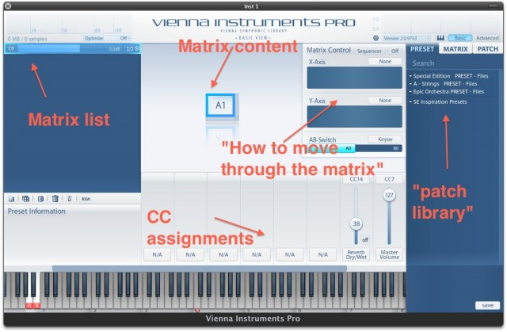</p>
<h3></h3>
<h3>Library Organization</h3>
<p>The most important concept in VI is the Matrix. (No, not the one with a funny green tinge, which only serves to keep you calm so you can be a nice battery for the machines!) VI’s matrix basically works like a grid, where you can move from left to right (and back) and from top to bottom (and back). Every such cell contains a single articulation, which called Patch in VI. You can find all patches on the right of the window in the patch tab. Note that while in other samplers, a patch may contain multiple articulations, in VI it never does. A patch is a single articulation! See the screenshot:</p>
<div class="mceTemp mceIEcenter">
<dl id="attachment_1391" class="wp-caption aligncenter" style="width: 205px;">
<dt class="wp-caption-dt">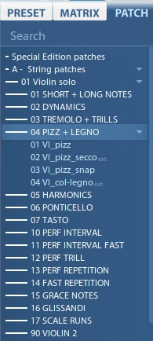</dt>
</dl>
</div>
<p>As you can see, there is a folder for different types of articulations, with the actual articulations being represented as single patches which you can drag into cells of a matrix.</p>
<p>A pre-programmed set of articulations organised in a grid is called matrix, which you will find in the matrix tab. Matrixes can be <span style="text-decoration: underline;">huge</span>, so you would be able to fit all articulations of a library into a single matrix with ease.</p>
<div>
<div class="mceTemp mceIEcenter">
<dl id="attachment_1392" class="wp-caption aligncenter" style="width: 202px;">
<dt class="wp-caption-dt">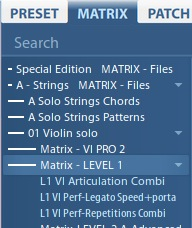</dt>
</dl>
</div>
</div>
<p>All VSL collections come with a large amount of factory matrixes, which usually (as you can see in the screenshot) contain what may be called &#8220;multis&#8221; in other samplers: Articulations sensibly mapped across the keyboard, sometimes with keyswitches. A matrix is usually what you will want to play on a single track in your projects if you like keyswitches or other means to switch between articulations on the same track.</p>
<p>Now comes the last layer: Presets. A preset consists of several matrixes, which can be accessed by keyswitches or bank select commands. Usually a factory preset will contain almost all articulations available in the library, see the screenshot:</p>
<div class="mceTemp mceIEcenter">
<dl id="attachment_1393" class="wp-caption aligncenter" style="width: 205px;">
<dt class="wp-caption-dt">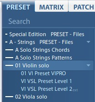</dt>
</dl>
</div>
<div>By now you are probably dying to know what „Level1“ and „Level 2“ mean, as well as the tiny „ext“ at the end of some names: All VSL collections (with some exceptions like <em>Dimension Brass</em>) have two parts, a <em>Standard Library</em> and an <em>Extended Library</em>. Both are installed at the same time and cannot be installed separately, but the license on your eLicenser determines whether you can use only Standard or both. Generally speaking, Standard has all the common articulations, while Extended adds more special stuff. The downside of not having a license for the Extended part of a library is that the samples are on your hard disk, but cannot be used. Level 1 denotes Standard content, while Level 2 (or „ext“) means Extended content. Why it doesn’t just say „Extended“ is everyone’s guess </div>
<p>You have a number of free starts of Extended content for demo purposes on your eLicenser. Unfortunately, many people do not realise that the Level 2 content needs an extra license, so they only realise it after their demo starts have been used up. So make sure when using any &#8220;ext&#8221; content that you actually have a valid license for it!</p>
<p>&nbsp;</p>
<h3>How to Use a Matrix</h3>
<p>So how do you actually use a matrix? And how can you switch between cells? Here’s a view of a matrix from VSL Solo Strings:</p>
<p style="text-align: center;">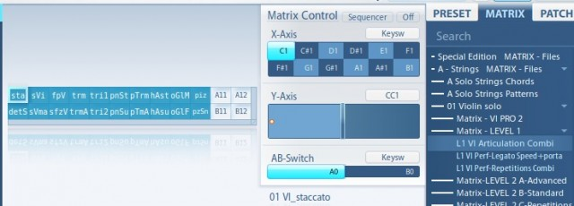</p>
<div></div>
<p>&nbsp;</p>
<p>This is the „L1 Vl Articulation Combi“, which means that it is a matrix with all common articulations for the Solo Violin and only uses Standard content. On the left you can see the matrix with its cells, all cells bearing abbreviated names. The selected cell (sta) stands for the patch 01 Vl_staccato, which you will find in the patch list under this name if you were so inclined to look for it. If you look more to the right, the Matrix Control section shows you the current settings for navigating within the matrix. This works very 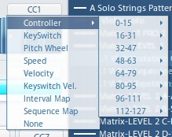much like your beloved grids in math class at school. You have an X-axis and a Y-axis and can assign different ways to move along the grid. In this case, the X-axis is controlled by regular keyswitches, while the Y-axis uses the modwheel. As you can see, the X-axis has tons of keyswitches because there are many „columns“ in the matrix. There are only two „rows“, though, which means that the modwheel has only two settings. VI Pro allows you to choose a sizable number of ways to move through the matrix. You can switch cells depending on how fast you play, or how hard you press a key, and so on.</p>
<div></div>
<p>The matrix makes VI Pro (and VI, for that matter) very powerful, but takes a bit of time to get used to. Fortunately, VSL ships a large number of very nicely done matrixes with their libraries, which also showcase specific features of the software. There are, for example, dedicated matrixes just for VI Pro 2 using its new sequencer.</p>
<p>&nbsp;</p>
<h3>Control Freaks</h3>
<p>At the bottom of the VI Pro window you have the control assignment area, where you can assign CCs and other means of control (speed, velocity…) to your instance for controlling a number of features. This is where you assign expression, volume, crossfades, and so on.</p>
<p>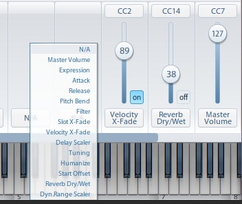</p>
<div></div>
<p>The controls area is incredibly flexible and makes assigning different controllers dead easy. With just a few clicks you can remap any controller. This is also where you can activate the integrated convolution reverb, a feature unique to VI Pro. The reverb comes from the Vienna Suite (a bundle of effects plugins developed with VI instrument collections in mind) and is very light on resources &#8211; the perfect way to make VSL collections sound great on a portable rig.</p>
<p>Also make sure to always assign Velocity X-Fade (pictured here). In combination with CC11 (Expression), it allows perfect control over dynamics and seamlessly morphs between velocity layers.</p>
<p>&nbsp;</p>
<h3>Advanced View</h3>
<p>As if the things we had a look at so far weren’t difficult enough to remember, this is not even half of VI Pro’s feature set. On the top right of the window, you can switch to the Advanced View.</p>
<p style="text-align: center;">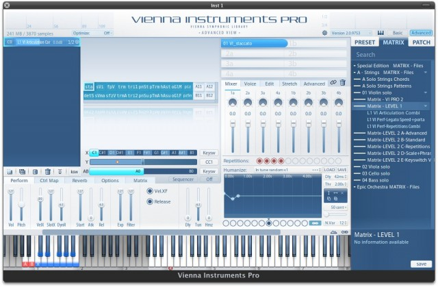</p>
<div></div>
<p>To go into details would get too deep here, but the VI Pro manual explains all this very well. Nevertheless, a few things are worth mentioning:</p>
<p>On the bottom right, the humanize feature allows you to simulate a realistic attack going quickly from being a tad out of tune to spot on &#8211; just like with real players. Make sure not to overdo it, though, or your expensive VSL collections will sound like a high school wind band  VI will randomize those human attacks, so on every key press you get a slightly different attack.</p>
<p>On the upper right, you can assign up to eight patches per cell, which not only allows you to stack different patches which will sound at the same time, but also lets you create crossfades between different patches in the same cell. With a combination of crossfade articulations inside a single cell, switching between cells in the matrix and switching between matrixes in the preset, the things you can do on a single track in your sequencer are almost limitless.</p>
<p>Underneath the patch assignment area, the mixer area has controls for panning of all the patches you assigned as well as for volume control. If you want to build stacks, this is an incredibly flexible way of making sure everything sounds good together. You can also set the volume as well as the key range of individual patches right in the keyboard view at the bottom of the window without any programming necessary.</p>
<hr />
<p>Hopefully this short overview of VI Pro 2 gave you a bit of an idea of the concept of the sampler and helps you to understand SCOREcast&#8217;s upcoming reviews of some of VSL’s instrument collections.</p>
<p>Leave a comment or a question in the COMMENT section below.</p>
</div>
</div>
</div>
 <!-- WP Biographia v3.3.2 -->
<div class="wp-biographia-container-top" style="background-color: #eadcdc; border-top: 4px solid #000000;"><div class="wp-biographia-pic" style="height:100px; width:100px;"></div><div class="wp-biographia-text"><h3><a href=".." title="Tobias Escher">Tobias Escher</a></h3><p>Based in Germany, Tobias J. Escher serves as Director of Technology for SCOREcast's European division. He is an educator in the field of media music and technology, and combines his classical training with his passion for music technology as a freelance composer and orchestrator. Tobias works closely with a number of software manufacturers as well as a technical administrator at the <i>University of Mainz</i>, where he graduated with an M.A. degree in Musicology and Anglophone Languages in 2012. He is also one of the founders of the <i>Unofficial Sibelius Wiki</i> and demonstrates Sibelius as an Avid artist.</p><div class="wp-biographia-links"><small><ul class="wp-biographia-list wp-biographia-list-icon"><li><a href="http://www.novatlan-sound.de" target="_blank" title="Tobias Escher On The Web" class="wp-biographia-link-icon"></a></li><li><a href="https://twitter.com/#!/NovatlanSound" target="_blank" title="Tobias Escher On Twitter" class="wp-biographia-link-icon"></a></li><li><a href="http://facebook.com/NovatlanSound" target="_blank" title="Tobias Escher On Facebook" class="wp-biographia-link-icon"></a></li><li><a href="39033404" target="_blank" title="Tobias Escher On LinkedIn" class="wp-biographia-link-icon"></a></li><li><a href="http://www.youtube.com/user/NovatlanSound" target="_blank" title="Tobias Escher On YouTube" class="wp-biographia-link-icon"></a></li><li><a href=".." target="_blank" title="More Posts By Tobias Escher" class="wp-biographia-link-icon"></a></li></ul></small></div></div></div><!-- WP Biographia v3.3.2 -->
]]></content:encoded>
			<wfw:commentRss>../../../2012/02/21/vienna-instruments-pro-2-interface-concept-overview/feed/</wfw:commentRss>
		<slash:comments>6</slash:comments>
	<post-id xmlns="com-wordpress:feed-additions:1">1387</post-id>	</item>
		<item>
		<title>SCOREcast 2011 Holiday Deal Guide</title>
		<link>../../../2011/11/24/scorecast-2011-holiday-deal-guide/</link>
		<comments>../../../2011/11/24/scorecast-2011-holiday-deal-guide/#comments</comments>
		<pubDate>Thu, 24 Nov 2011 14:17:04 +0000</pubDate>
		<dc:creator><![CDATA[Tobias Escher]]></dc:creator>
				<category><![CDATA[Technology]]></category>
		<category><![CDATA[gear]]></category>
		<category><![CDATA[studio]]></category>

		<guid isPermaLink="false">../../../?p=1250</guid>
		<description><![CDATA[The holidays are here, and there's a plethora of deals and discounts floating around the Web for composers. Here's our list of the best ones, constantly updated with links and details!]]></description>
				<content:encoded><![CDATA[<h1>The holidays are here!</h1>
<p>And with them comes a huge load of deals perfectly suited for a serious shopping spree. We have compiled a list of the best deals out there, including convenient links to the respective websites and details about the nature of the deals.</p>
<p>With this list, which will be maintained and updated in the future we would also like to introduce you as our readership to our brand-new <em><strong>SCOREcast Technology Team</strong></em>, bringing you reviews, tutorials and the latest and greatest information about music technology.</p>
<p>We hope you enjoy the list and find some deals that will put your credit card to use!</p>
<hr />
<h3><a title="8dio" href="http://8dio.com/" target="_blank">8dio</a></h3>
<h3><span class="Apple-style-span" style="font-size: 13px; font-weight: normal;">All products</span></h3>
<p>30% off until November 27th, 2011<br />
use &#8220;gimmegimme&#8221; at checkout</p>
<h3></h3>
<hr />
<h3><a href="http://www.analog-factory.com/" target="_blank">Analogfactory</a></h3>
<p>All products<br />
50% off until December 5th, 2011</p>
<hr />
<h3><a href="http://antarestech.com/" target="_blank">Antares</a></h3>
<p>Autotune<br />
Buy and Register Auto-Tune 7 Native or TDM by January 1, 2011 and Get a Free Copy of Mic Mod EFX!</p>
<hr />
<h3><a href="http://www.bigfishaudio.com/" target="_blank">Big Fish Audio</a></h3>
<p>All products<br />
&#8220;until Sunday the 27th of November.</p>
<ul>
<li>25% OFF all orders of $199 or more. Use code: TGS25</li>
<li>15% OFF all orders of $99 to $198. Use code: TGS15</li>
<li>10% OFF all orders less then $99. Use code: TGS10&#8243;</li>
</ul>
<hr />
<h3><a href="http://www.soundsondemand.com/sort1.asp/bluezone_corporation/en" target="_blank">Bluezone Corporation</a></h3>
<p>All DL products<br />
20% discount on all downloads until 30th November 2011</p>
<hr />
<h3><a title="Cinesamples" href="http://cinesamples.com/retail/" target="_blank">Cinesamples</a></h3>
<h3><span class="Apple-style-span" style="font-size: 13px; font-weight: normal;">All excl. CineBrass</span></h3>
<p>Most products 40% off<br />
Voxos/Hollywoodwinds 30% off<br />
Until November 28th</p>
<hr />
<h3><a href="http://www.discodsp.com/deals/" target="_blank">DiscoDSP</a></h3>
<p>All products<br />
Black Friday Sale 50% OFF Until November 25th</p>
<hr />
<h3><a href="http://www.soundsonline.com/" target="_blank">EastWest</a></h3>
<ul>
<li><em>Hollywood Brass<br />
</em>&#8220;20% off for new licenses<br />
30% off for HollwoodStrings to HWBrass crossgrades<br />
30% off for HWS/HWB bundle&#8221;</li>
<li><em>2-for-1 Deal</em> (buy one, get the 2nd of equal or lesser value FREE)<br />
HW Strings Diamond, HW Strings Gold, Spaces, The Dark Side, Symphonic Choirs Bundle/Single, EWQLSO Bundle/Platinum/Platinum Plus/Gold, Ministry of Rock 1 &amp; 2, Goliath, Stormdrum Bundle/2, Silk, Gypsy, Pianos/Gold Edition, Ra, Fab Four, Voices of Passion</li>
</ul>
<hr />
<h3><a href="http://www.groove3.com" target="_blank">Groove3</a></h3>
<ul>
<li>Music DAW / Production Tutorials<br />
During the entire month of November, you can save 50% off all downloads and you can get our 1-Year All-Access pass for only $99! That&#8217;s full online access to everything, for 1 year, for less than $100</li>
</ul>
<hr />
<h3><a href="http://www.heavyocity.com/" target="_blank">Heaviocity</a></h3>
<ul>
<li>Evolve: $309 $229</li>
<li>Evolve Crossgrade 1: $269 $199</li>
<li>Evolve Crossgrade 2: $229 $169</li>
<li>Evolve KU Crossgrade:$229 $169</li>
<li>Evolve 1.5 Upgrade: $29.95 $4.95&#8243;</li>
</ul>
<hr />
<h3><a href="http://www.kirkhunterstudios.com/signup_black_friday_group_buy.php" target="_blank">Kirk Hunter</a></h3>
<p>All titles<br />
Group buy &#8211; 75% off</p>
<hr />
<h3><a href="http://www.soundsondemand.com/sort1.asp/loopboutique/en" target="_blank">Loop Boutique</a></h3>
<p>All DL products<br />
Loop Boutique offers a 20% discount on all of their downloads until November 30th 2011</p>
<hr />
<h3><a href="http://www.musiciansfriend.com/all-black-friday-deals" target="_blank">Musicians Friend</a></h3>
<p>Hundreds (Too many to list)<br />
Serious discounts, most items ship internationally</p>
<hr />
<h3><a href="http://native-instruments.com" target="_blank">Native Instruments</a></h3>
<ul>
<li>Amazon has Komplete 6 for <a href="http://www.amazon.com/Native-Instruments-KOMPLETE-6-Software-Bundle/dp/ B002Q130IA/" target="_blank">$276.00</a></li>
<li><a href="http://native-instruments.com" target="_blank">Native-Instruments.com</a>—50% off Komplete instruments and FX until November 28, 2011</li>
</ul>
<div>
<hr />
<h3><a title="Orange Tree Samples" href="http://www.orangetreesamples.com" target="_blank">OrangeTreeSamples</a></h3>
<p>40% off, excluding Passion Flute<br />
only this weekend<br />
use code &#8220;OrangeFriday&#8221;</p>
</div>
<hr />
<h3><a href="http://www.soniccouture.com" target="_blank">Soniccouture</a></h3>
<p>All products</p>
<ul>
<li>Starting on December 1st &#8211; &#8220;Buy One, Get One Free!&#8221;</li>
<li>Also, current bundle deals include:<br />
Buy any 3, get 20% off: Enter Code &#8211; 77JW42VC3R<br />
Buy any 4, get 25% off: Enter Code -SIY6HC86JT</li>
</ul>
<hr />
<h3><a href="http://www.sonivoxmi.com/" target="_blank">Sonivox</a></h3>
<p>All, including <em>Broadway Big Band</em> libs<br />
25% off, coupon &#8220;TURKEY&#8221;</p>
<hr />
<h3><a href="http://www.sonnoxplugins.com/pub/plugins/blackfridayoffer.htm" target="_blank">Sonnox</a></h3>
<p>Oxford plugin bundles<br />
50% off</p>
<hr />
<h3><a title="Soundiron" href="http://www.soundiron.com" target="_blank">Soundiron</a></h3>
<p>All products except Reqiem Light<br />
33% off</p>
<hr />
<h3><span class="Apple-style-span" style="font-size: 15px;"><a href="https://sugar-bytes.de/shop/index.php?lang=en" target="_blank">Sugar Bytes</a></span></h3>
<p>All products<br />
Discounts vary until December 31st (visit site for more info)</p>
<hr />
<h3><a href="http://www.timespace.com/news/2302/rob-papen-delay---only-%A310-for-1-week- only%21.html" target="_blank">Time &amp; Space</a></h3>
<p>Rob Papen Delay &amp; Distort<br />
£10 for the pair</p>
<hr />
<h3><a href="http://www.audiomidi.com/Products/xln_addr/" target="_blank">XLN Audio</a></h3>
<p>Addictive Drums<br />
$99 instead of $249 (60% off)</p>
<hr />
<h3><a href="http://www.soundsonline.com/" target="_blank">Zero-G</a></h3>
<p>All titles<br />
30% off regular retail/Ends December 31st, 2011</p>
 <!-- WP Biographia v3.3.2 -->
<div class="wp-biographia-container-top" style="background-color: #eadcdc; border-top: 4px solid #000000;"><div class="wp-biographia-pic" style="height:100px; width:100px;"></div><div class="wp-biographia-text"><h3><a href=".." title="Tobias Escher">Tobias Escher</a></h3><p>Based in Germany, Tobias J. Escher serves as Director of Technology for SCOREcast's European division. He is an educator in the field of media music and technology, and combines his classical training with his passion for music technology as a freelance composer and orchestrator. Tobias works closely with a number of software manufacturers as well as a technical administrator at the <i>University of Mainz</i>, where he graduated with an M.A. degree in Musicology and Anglophone Languages in 2012. He is also one of the founders of the <i>Unofficial Sibelius Wiki</i> and demonstrates Sibelius as an Avid artist.</p><div class="wp-biographia-links"><small><ul class="wp-biographia-list wp-biographia-list-icon"><li><a href="http://www.novatlan-sound.de" target="_blank" title="Tobias Escher On The Web" class="wp-biographia-link-icon"></a></li><li><a href="https://twitter.com/#!/NovatlanSound" target="_blank" title="Tobias Escher On Twitter" class="wp-biographia-link-icon"></a></li><li><a href="http://facebook.com/NovatlanSound" target="_blank" title="Tobias Escher On Facebook" class="wp-biographia-link-icon"></a></li><li><a href="39033404" target="_blank" title="Tobias Escher On LinkedIn" class="wp-biographia-link-icon"></a></li><li><a href="http://www.youtube.com/user/NovatlanSound" target="_blank" title="Tobias Escher On YouTube" class="wp-biographia-link-icon"></a></li><li><a href=".." target="_blank" title="More Posts By Tobias Escher" class="wp-biographia-link-icon"></a></li></ul></small></div></div></div><!-- WP Biographia v3.3.2 -->
]]></content:encoded>
			<wfw:commentRss>../../../2011/11/24/scorecast-2011-holiday-deal-guide/feed/</wfw:commentRss>
		<slash:comments>1</slash:comments>
	<post-id xmlns="com-wordpress:feed-additions:1">1250</post-id>	</item>
	</channel>
</rss>
